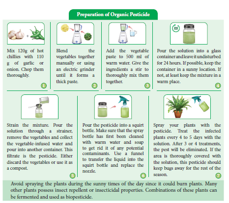
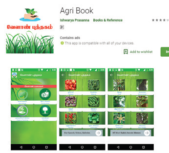
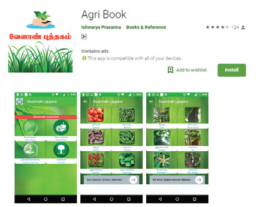
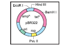
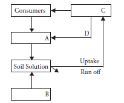
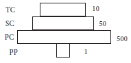
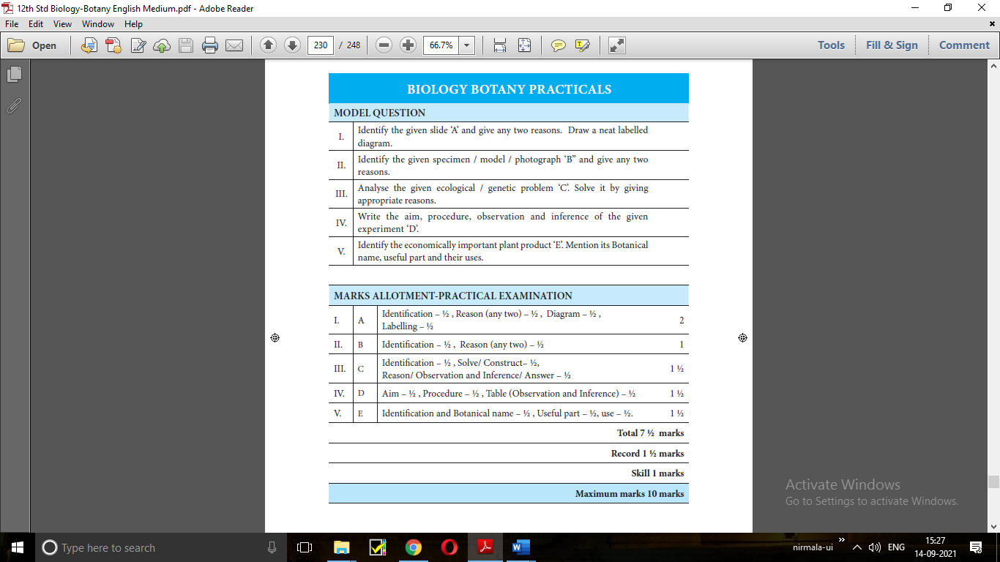
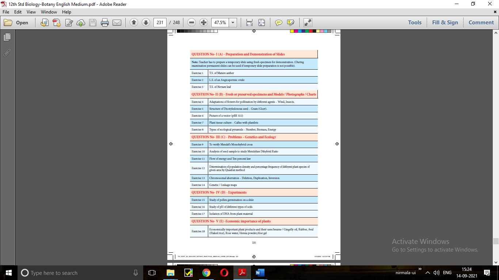

Entrepreneurial Botany is the study of how new businesses are created using plant resources as well as the actual process of starting a new business. An entrepreneur issomeone who has an idea and who works to create a product or service that people will buy, by building an organization to support the sales. Entrepreneurship is now a popular topic for higher secondary students, with a focus on developing ideas to create new ventures among the young people. Vast opportunities are there for the students of Botany. In the present scenario students should acquire ability to merge skills and knowledge in a meaningful way. Converting botanical knowledge into a business idea that can be put into practice for earning a livelihood is the much-needed training for the students.
Few examples for activities of entrepreneurship are Mushroom cultivation, Single cell protein OPEN BRACKET SCP CLOSE BRACKET production, Seaweed liquid fertilizer, Organic farming, Terrarium, Bonsai and Cultivation of medicinal and aromatic plants This part of the chapter is dealt about organic farming in brief.
Organic farming is an alternative agricultural system in which plantsSLASHcrops are cultivated in natural ways by using biological inputs to maintain soil fertility and ecological balance thereby minimizing pollution and wastage. Indians were organic farmers by default until the green revolution came into practice.
Use of biofertilizers is one of the important components of integrated organic farm management, as they are cost effective and renewable source of plant nutrients to supplement the chemical fertilizers for sustainable agriculture. Several microorganisms and their association with crop plants are being exploited in the production of biofertilizers. Organic farming is thus considered as the movement directed towards the philosophy of Back to Nature.

Figure 10.20: Preparation of organic pesticide
Pest like aphids, spider and mites can cause serious damage to flowers, fruits, and vegetables.These creatures attack the garden in swarms, and drain the life of the crop and often invite disease in the process. Many chemical pesticides prove unsafe for human and the environment. It turns fruits and vegetables unsafe for consumption. Thankfully, there are many homemade, organic options to turn to war against pests.
Botanical pest repellent and insecticide made with the dried leaves of Azadirachta indica
Preparation of Bio-pest repellent
Pluck leaves from the neem tree and chop the leaves finely.
The chopped up leaves were put in a 50-liter container and fill to half with water; put the lid on and leave it for 3 days to brew.
Using another container, strain the mixture which has brewed for 3 days to remove the leaves, through fine mesh sieve. The filtrate can be sprayed on the plants to repel pests.
To make sure that the pest repellent sticks tothe plants, add 100 ml of cooking oil and the same amount of soap water. OPEN BRACKET The role of the soap water is to break down the oil, and the role of the oil is to make it stick to the leaves CLOSE BRACKET.
The stewed leaves from the mixture can be used in the compost heap or around the base of the plants.
Early civilization in different parts of the world has domesticated different species of plants for various purposes. Based on their utility, the economically useful plants are classified into food plants, fibre plants, timber plants, medicinal plants, and plants used in paper industries, dyes and cosmetics.
However, food base of majority of the population depends on very few Cereals, Millets, Pulses, Vegetables, Fruits, Nuts, Sugars, Oil seeds, Beverages, Spices and Condiments.
Oils can be classified into two types namely, essential oils and vegetable oils. Fatty acids in oil may be saturated or unsaturated. The oil yielding plants are groundnut and sesame. The oils are used in cooking, making soaps and other purposes. Beverages contain alkaloids that stimulate central nervous system. Spices were used throughout the world for several years. Cardamom is ‘Queen of Spices’ used for flavouring confectionaries and beverages. Black pepper is King of Spices.
Botanically a fibre is a long, narrow, thick walled cell. Cotton and Jute are fibre yielding plants. Teak is wood used for making furniture. Rubber is produced from the latex of Hevea brasiliensis. Paper production is a Chinese invention. Dyes have been used since ancient times. The orange dye henna is from the leaves of Lawsonia. Perfumes are volatile and aromatic in nature, manufactured from essential oils which are found at different parts of the plant. Medicinal plants serve as therapeutic agents. Medicinally useful molecules obtained from these plants are marketed as drugs are called Biomedicines. Whereas phytochemicals from some of the plants which alter an individual’s perceptions of mind by producing hallucination are known as psychoactive drugs.
Entrepreneurial Botany is the study of how new businesses are created using plant resources as well as the actual process of starting a new business.
1. Consider the following statements and choose the right option.
1 CLOSE BRACKET Cereals are members of grass family.
2 CLOSE BRACKET Most of the food grains come from monocotyledon.
a CLOSE BRACKET OPEN BRACKET 1 CLOSE BRACKET is correct and OPEN BRACKET 2 CLOSE BRACKET is wrong
b CLOSE BRACKET Both OPEN BRACKET 1 CLOSE BRACKET and OPEN BRACKET 2 CLOSE BRACKET are correct
c CLOSE BRACKET OPEN BRACKET 1 CLOSE BRACKET is wrong and OPEN BRACKET 2 CLOSE BRACKET is correct
d CLOSE BRACKET Both OPEN BRACKET 1 CLOSE BRACKET and OPEN BRACKET 2 CLOSE BRACKET are wrong
2. Assertion: Vegetables are important part of healthy eating.
Reason: Vegetables are succulent structures of plants with pleasant aroma and flavours.
a CLOSE BRACKET Assertion is correct, Reason is wrong
b CLOSE BRACKET Assertion is wrong, Reason is correct
c CLOSE BRACKET Both are correct and reason is the correct explanation for assertion.
d CLOSE BRACKET Both are correct and reason is not the correct explanation for assertion.
3. Groundnut is native of dash
a CLOSE BRACKET Philippines
b CLOSE BRACKET India
c CLOSE BRACKET North America
d CLOSE BRACKET Brazil
4. Statement A: Coffee contains caffeine
Statement B: Drinking coffee enhances cancer
a CLOSE BRACKET A is correct, B is wrong
b CLOSE BRACKET A and B – Both are correct
c CLOSE BRACKET A is wrong, B is correct
d CLOSE BRACKET A and B – Both are wrong
5. Tectona grandis is coming under family
a CLOSE BRACKET Lamiaceae
b CLOSE BRACKET Fabaceae
c CLOSE BRACKET Dipterocaipaceae
d CLOSE BRACKET Ebenaceae
6. Tamarindus indica is indigenous to
a CLOSE BRACKET Tropical African region
b CLOSE BRACKET South India, Sri Lanka
c CLOSE BRACKET South America, Greece
d CLOSE BRACKET India alone
7. New world species of cotton
a CLOSE BRACKET Gossipium arboretum
b CLOSE BRACKET G.herbaceum
c CLOSE BRACKET Both a and b
d CLOSE BRACKET G.barbadense
8. Assertion: Turmeric fights various kinds of cancer
Reason: Curcumin is an anti-oxidant present in turmeric
a CLOSE BRACKET Assertion is correct, Reason is wrong
b CLOSE BRACKET Assertion is wrong, Reason is correct
c CLOSE BRACKET Both are correct d CLOSE BRACKET Both are wrong
9. Find out the correctly matched pair.
a CLOSE BRACKET Rubber Shorea robusta
b CLOSE BRACKET Dye Lawsonia inermis
c CLOSE BRACKET Timber Cyperus papyrus
d CLOSE BRACKET Pulp Hevea brasiliensis
10. Observe the following statements and pick out the right option from the following:
Statement 1 – Perfumes are manufactured from essential oils.
Statement 2 – Essential oils are formed at different parts of the plants.
a CLOSE BRACKET Statement 1 is correct
b CLOSE BRACKET Statement 2 is correct
c CLOSE BRACKET Both statements are correct
d CLOSE BRACKET Both statements are wrong
11. Observe the following statements and pick out the right option from the following:
Statement 1: The drug sources of Siddha include plants, animal parts, ores and minerals.
Statement 2: Minerals are used for preparing drugs with long shelf-life.
a CLOSE BRACKET Statement 1 is correct
b CLOSE BRACKET Statement 2 is correct
c CLOSE BRACKET Both statements are correct
d CLOSE BRACKET Both statements are wrong
12. The active principle trans-tetra hydro canabial is present in
a CLOSE BRACKET Opium
b CLOSE BRACKET Curcuma
c CLOSE BRACKET Marijuana
d CLOSE BRACKET Andrographis
13. Which one of the following matches is correct QUESTION MARK
a CLOSE BRACKET Palmyra - Native of Brazil
b CLOSE BRACKET Saccharun - Abundant in Kanyakumari
c CLOSE BRACKET Steveocide - Natural sweetener
d CLOSE BRACKET Palmyra sap - Fermented to give ethanol
14.Write the cosmetic uses of Aloe.
15.What is pseudo cereal QUESTION MARK Give an example. 17.Discuss which wood is better for making furniture.
16 A person got irritation while applying chemical dye. What would be your suggestion for alternative.
17. Name the humors that are responsible for the health of human beings.
18 Give definitions for organic farming QUESTION MARK
19.Which is called as the “King of Bitters” QUESTION MARK Mention their medicinal importance.
20. Differentiate bio-medicines and botanical medicines.
21. Write the origin and area of cultivation of green gram and red
22. What are millets QUESTION MARK What are its types QUESTION MARK Give example for each type.
24. If a person drinks a cup of coffee daily it will help him for his health. Is this correct QUESTION MARK
If it is correct, list out the benefits.
25. Enumerate the uses of turmeric.
26. What is TSM QUESTION MARK How does it classified and what does it focuses on QUESTION MARK
27. Write the uses of nuts you have studied.
28. Give an account on the role of Jasminum in perfuming
29. Give an account of active principle and medicinal values of any two plants you have studied.
30. Write the economic importance of rice.
31. Which TSM is widely practiced and culturally accepted in Tamil Nadu QUESTION MARK – explain
32. What are psychoactive drugs QUESTION MARK Add a note Marijuana and Opium
33. What are the King and Queen of spices QUESTION MARK Explain about them and their uses.
34. How will you prepare an organic pesticide for your home garden with the vegetables available from your kitchen QUESTION MARK
Glossary
Alzheimer’s disease:
A type of dementia that causes problems with memory, thinking and behavior
Antiperspirant:
Products whose primary function is to inhibit perspiration SLASH sweat
Anti-inflammatory:
The property of a substance or treatment that reduces swelling.
Antioxidant:
A substance that scavenges free radicals.
Carminative:
A drug causing expulsion of gas from the stomach or bowel.
Cirrhosis:
A chronic liver disease typically caused by alcoholism or hepatitis.
Confectionary:
A place where confectionsSLASH sweets are kept or made
Cosmetics:
Substances or products used foe personal grooming.
Diuretic:
Substance that promote urine production
Ethnobiology:
Ethnobiology is the study of relationships between peoples and plants.
Fixative:
A substance used to reduce the evaporation rate and improve stability when added to more volatile components.
Lubricant:
Oily substance reduces friction.
Malnutrition:
Deficiencies, excesses or imbalances in a person’s intake of energy and SLASH or nutrients
Odour:
Smell OPEN BRACKET pleasant or unpleasant CLOSE BRACKET.
Perfumery:
The art or process of making perfume
Pharmacopoeia:
Is a book containing directions for the identification of compound medicines, and published by the authority of a government or a medical or pharmaceutical society.
Seasoning:
The processing of food with spices and condiments to enhance the flavour

Economically Useful Plants
Let us know about the agriculture in detail through this activity
Steps
Type the URL or scan the QR code to open the activity page then Introduction page will open.
Select Package of Practices to know the various methods of agricultural crops breeding system.
Click on Chat with expert helps the farmers to clarify their doubts.
Click on Videos to know about the agricultural methods visually through videos
URL: https:SLASHSLASHplay.google.comSLASHstoreSLASHappsSLASHdetails QUESTION MARKid=com.criyagen

Let us know about the Agri book in detail through this activity
Steps
Type the URL or scan the QR code to open the activity page then Introduction page will open.
Click on Agriculture it will display the approaches to cultivate the planted paddy, cotton and sugarcane.
Click on Horticulture it will display the approaches to cultivate the agricultural crops like tea, coffee.
Click on Organic Farming it will explain the Traditional method of farming and Traditional Fertilizers.
Click on Forestry it will explain the gardening methods about plants.
URL:
https:SLASHSLASHplay.google.comSLASHstoreSLASHappsSLASHdetails QUESTION MARKid=com.agribook.venkatmc.agri
Annexure
1. Gangulee, H.C., and Datta, C., 1972 College Botany,-Volume 1 New Central Book Agency, Calcutta-9.
2. Bhojwani,S.S and Bhatnagar, S.P. 1997. The Embryology of Angiosperms. VIKAS Publishing Housing Pvt Limited, New Delhi.
3. Rao,K.N and Krishnamurthy, K.V. 1976 Angiosperms ,Publisher S.Viswanathan, Chennai.
4. Maheswari, P. 1950. An introduction to the embryology of angiosperms Tata Mcgraw Hill Publishing Co Ltd. New Delhi.
5. Pat Willmer, 2011. Pollination and Floral Ecology, Princeton University Press. USA
6. Embryology of Flowering Plants Terminology and Concepts. 2009 Vol. 3:Reproductive Systems OPEN BRACKET Edited by T.B.Batygina CLOSE BRACKET Science Publishers Enfield OPEN BRACKET NH CLOSE BRACKET USA.
1. Anthony J.F. Griffiths, Susan R. Wessler, Richard C. Lewontin, Sean B. Carroll OPEN BRACKET 2004 CLOSE BRACKET
Introduction to Genetics Analysis 8th Edition, USA: W.H. Freeman & Co. Ltd.
2. Benjamin A. Pierce OPEN BRACKET 2010 CLOSE BRACKET, Genetics: A conceptual approach, 3rd Edition, New York
3. Carl P. Swanson, Timothy Merz, William J. Yound, Cytogenetics, OPEN BRACKET 1965 CLOSE BRACKET Eastern Economy Edition.
4. Carl-Erik Tornqvist, William G Hopkins, OPEN BRACKET 2006 CLOSE BRACKET, Plant Genetics, New York: Chelsa House publications.
5. Clegg C J, OPEN BRACKET 2014 CLOSE BRACKET Biology, London: Hooder Education
6. Daniel L, Hartl, David Freifelder, Leon A. Snyder, Jones OPEN BRACKET 2009 CLOSE BRACKET, Basic Genetics, Bartlett publishers, USA
7. James D.Watson, Tania A. Baker, Stephen P.Bell, Alexander Gann, Michael Levine, Richard Losick, OPEN BRACKET 2013 CLOSE BRACKET Molecular Biology of the Gene –London: Pearson Education
8. Krishnan.V, N. Senthil, Kalaiselvi Senthil OPEN BRACKET 2015 CLOSE BRACKET, Principles of Genetics, 2nd Edition.
9. Leland H. Hartwell, Leroy Hood, OPEN BRACKET 2011 CLOSE BRACKET, Genetics, 4th Edition, New York: McGraw Hill Companies.
10. Linda E Graham, James M. Graham, Lee W. Wilcox OPEN BRACKET 2006 CLOSE BRACKET, Plant Biology, 2nd Edition, Pearson Education, Inc.
11. Monroe W. Strickberger, Genetics – London: Pearson Education, Inc.
12. Peter J. Russell OPEN BRACKET 2003 CLOSE BRACKET, Essential Genetics, Pearson Education, Benjamin Cummings, San Francisco.
13. Randhawa S.S OPEN BRACKET 2010 CLOSE BRACKET, A Text Book of Genetics, 3rd Edition, S.Vikas and company.
14. Rober J. Brooker OPEN BRACKET 2015 CLOSE BRACKET, Genetics, 4th Edition , London: McGraw Hill.
1. Alan Seragg OPEN BRACKET 2010 CLOSE BRACKET. Environmental Biotechnology. Second Edition. Oxford University Press, Oxford, New York.
2. Bernard R. Glick; Jack J. Pasternak, Cheryl L. Patten OPEN BRACKET 2010 CLOSE BRACKET. Molecular Biotechnology:
Principles and Applications of Recombinant DNA. ASM Press, USA.
3. Bhojwani, S. S. and Razdan, M. K. OPEN BRACKET 2004 CLOSE BRACKET. Plant Tissue Culture: Theory and Practice. Elsevier Science.
4. Bhojwani, S. S. and Razdan, M. K. OPEN BRACKET 1996 CLOSE BRACKET. Plant Tissue Culture Theory and Practice. A Revised Edition, Elsevier, Amsterdam.
5. Bimal, C., Bhattacharyya and Rintu Banerjee OPEN BRACKET 2010 CLOSE BRACKET. Environmental Biotechnology. Oxford University Press, Oxford, New York.
6. Brown, T. A. OPEN BRACKET 2007 CLOSE BRACKET. Gene Cloning and DNA Analysis - An Introduction. 6th ed., Wiley-Blackwell, UK.
7. Chen, Z. and Evans, D. A. OPEN BRACKET 1990 CLOSE BRACKET. General techniques of tissue cultures in perennial crops. In: Z. Chen et al. OPEN BRACKET ed. CLOSE BRACKET. Handbook of Plant Cell Culture. Vol. 6. Perennial Crop. McGraw-Hill Publishing Company, New York.
8. Dixon, R. A. and Gonzales, R. A. OPEN BRACKET 2004 CLOSE BRACKET. Plant Cell Culture. IRL Press.
9. Dubey, R. C. OPEN BRACKET 2009 CLOSE BRACKET. A Textbook of Biotechnology. S. Chand & Co. Ltd., New Delhi.
10. Glick, B. R. and Pasternak, J. J. OPEN BRACKET 2002 CLOSE BRACKET. Molecular Biotechnology: Principles and
Applications of Recombinant DNA. Panima Publishers Co., USA.
11. Gupta, P. K. OPEN BRACKET 2010 CLOSE BRACKET. Elements of Biotechnology. Rastogi & Co., Meerut.
12. Kalyankumar De OPEN BRACKET 2007 CLOSE BRACKET. An Introduction to Plant Tissue Culture Techniques, New Central Book Agency, Kolkata.
13. Morgan, Thomas Hunt OPEN BRACKET 1901 CLOSE BRACKET. Regeneration. New York: Macmillan.
14. Ramawat, K. G. OPEN BRACKET 2000 CLOSE BRACKET. Plant Biotechnology. S. Chand & Co. Ltd., New Delhi.
15. Razdan, M. K. OPEN BRACKET 2004 CLOSE BRACKET. Introduction to Plant Tissue Culture. Second Edition. Oxford & IBH Publishing Co. Pvt. Ltd., New Delhi.
26. Smita Rastogi and Neelam Pathak OPEN BRACKET 2010 CLOSE BRACKET. Genetic Engineering. Oxford University Press, New Delhi.
1. Chapman J.L. and Reiss M.J., OPEN BRACKET 1995 CLOSE BRACKET, Ecology – Principles and Applications, NewYork: Cambridge University Press,
2. Dash M.C., OPEN BRACKET 2011 CLOSE BRACKET, 3rd Edition, Fundamental of Ecology, Tata McGrawhill, New Delhi.
3. Eugene P. Odum, Ecology, 2nd Edition, New Delhi:Oxford & IBH Publishing Co. Pvt. Ltd.,
4. Kochar P.L., OPEN BRACKET 1995 CLOSE BRACKET, Plant Ecology, Agra: Ratch Prakashon Mandir,
5. Madhab Chandra Dash, Sathya Prakash, OPEN BRACKET 2011 CLOSE BRACKET, Fundamentals of Ecology, New Delhi: Tata McGrawhill,.
6. Mannel C. Molles Jr., OPEN BRACKET 2010 CLOSE BRACKET, Ecology – Concepts and Applications, New Delhi: Tata McGrawhill,
7. Michael Cain, William D. Bowman, Sally D. Hacker, OPEN BRACKET 2008 CLOSE BRACKET, Ecology, V Publisher: Sinauer Associates, Inc
8. Misra K.C., OPEN BRACKET 1998 CLOSE BRACKET, Manual of Plant Ecology, Oxford & IBH Publishing Co. Pvt. Ltd., New Delhi.
9. Mohan P. Arora, OPEN BRACKET 2016 CLOSE BRACKET, Ecology, Mumbai: Himalaya Publishers
10. Peter J. Russel, Stephan L. Wolla, Paul E. Hertz, Cacie Starr, Haventy McMillan, OPEN BRACKET 2008 CLOSE BRACKET, Ecology, New Delhi: Cengage Learing India Pvt. Ltd.,
11. Peter Stiling, OPEN BRACKET 2012 CLOSE BRACKET, Ecology Global Insighto and Investigations, New Delhi:.Tata McGrawhill,
12. Sharma P.D., OPEN BRACKET 2018 CLOSE BRACKET, 13th Edition, Ecology and Environment, Meerut : Rastogi Publication.
13. Shukla and Handel.C, OPEN BRACKET 2016 CLOSE BRACKET, Plant Ecology, S. Chand & Company Ltd., New Delhi.
14. Singh. H.R., OPEN BRACKET 2009 CLOSE BRACKET, Environmental Biology, New Delhi: S. Chand and Company Limited.
15. Sir Harry G. Champion, Seth S.K., OPEN BRACKET 2005 CLOSE BRACKET, The forest types of India, Natraj Publication, Dehradun.
16. Thomas M. Smith, Robert Leo Smith, OPEN BRACKET 2015 CLOSE BRACKET, Elements of Ecology, England: Pearson Education Ltd.,
17. Verma. V, OPEN BRACKET 2011 CLOSE BRACKET, Plant Ecology, New Delhi: Anu Books Pvt. Ltd.,
1. Gopalan C, Rama Sastri B.V, and Balasubramanian S.C., OPEN BRACKET 1989 CLOSE BRACKET Nutritive value of Indian Foods – Revised and updated by Narasinga RaoB.S., Deosthale Y.G. and Pant K.C., Hyderabad; National Institute of Nutrition, ICMR.
2. Kochhar, S.L. OPEN BRACKET 2016 CLOSE BRACKET Economic Botany in the Tropics, OPEN BRACKET Fifth Edition CLOSE BRACKET, Delhi:Cambridge
University Press
3. Simpson, B.B., Ogozaly, M.C., OPEN BRACKET 2001 CLOSE BRACKET Economic Botany OPEN BRACKET 3rd Edition CLOSE BRACKETNewyork: McGraw- Hill.
4. Marriyaom H. Reshid, OPEN BRACKET 2017 CLOSE BRACKET, The Flavour of Spices – Journeys, Recipes and Stores, Hochette India.
5. Gerrald E. Wickens, OPEN BRACKET 2001 CLOSE BRACKET Economic Botany Principles and Practices, Netherlands: Springer.
6. Rajkumar Joshi, OPEN BRACKET 2013 CLOSE BRACKET Aromatic and Vital Oil Plants. New Delhi:Agrotech Press,
7. Mukund Joshi, OPEN BRACKET 2015 CLOSE BRACKET, Text Book of Field Crops, Delhi: PHI Learning Private Limited.
8. Rajesh Kumar Dubey, OPEN BRACKET 2016 CLOSE BRACKET Green Growth, Eco-Livelihood & Sustainability New Delhi:
Ocean Books Private Limited.
Unit 6 – Reproduction in plants |
|
Apomixis |
கருவுறா இனப்பெருக்கம் |
Apospory |
கருவுறா வித்து |
Archesporium |
முன்வித்து திசு |
Cleistogamous flower |
மூடிய பூ |
Cryopreservation |
குளிர்பாதுகாப்பு |
Embryo sac |
கருப்பை |
Floral primordium |
மலர் தோற்றுவி |
Funiculus |
சூல் காம்பு |
Microsporogenesis |
நுண் வித்துருவாக்கம் |
Polyembryony |
பல்கருநிலை |
Scion |
ஒட்டுத் தண்டு |
Stock |
வேர்கட்டை |
Unit 7 – Genetics |
|
Allele |
அல்லீல் |
Allopolyploidy |
அயல்பன்மடியம் |
Alternative splicing |
மாற்று இயைத்தல் |
Autopolyploidy |
தன்பன்மடியம் |
Backcross |
பிற்கலப்பு |
Blending inheritance |
கலப்பு பாரம்பரியம் |
Branch migration |
கிளைவழி இடம்பெயர்தல் |
Codominance |
இணைஓங்குத்தன்மை |
Complete linkage |
முழுமையான பிணைப்பு |
Complementation test |
நிரப்பு சோதனை |
Coupling |
இணைப்பு |
Crossing over |
குறுக்கேற்றம் |
DNA metabolism |
DNA வளர் சிதை மாற்றம் |
Dominance |
ஓங்குத்தன்மை |
Duplication |
இரட்டிப்பாதல் |
F1 generation OPEN BRACKET first filial generation CLOSE BRACKET |
முதல் மகவுச்சந்ததி |
Frame shift mutation |
கட்ட நகர்வு சடுதி மாற்றம் |
Gene interaction |
மரபணு இடைச்செயல் |
Gene mapping |
மரபணு வரைபடம் |
Genome |
மரபணுத்தொகையம் |
Genotype |
மரபணுவகையம் |
Haploidy |
ஒருமடியம் OPEN BRACKET பன்மம் CLOSE BRACKET |
Heredity |
பாரம்பரியம் |
Heterozygous |
மாறுபட்ட பண்பிணைவு |
Homologous chromosome |
ஒத்த அமைவிட குரோமோசோம் |
Incomplete dominance |
முழுமைபெறா ஓங்குத்தன்மை |
Incomplete linkage |
முழுமையற்ற பிணைப்பு |
Independent assortment |
சாராஒதுங்கு விதி |
Internal methylation |
அக மெத்திலாக்கம் |
Inversion |
தலை கீழ் திருப்பம் |
Jumping genes |
தாவும் மரபணுக்கள் |
Linkage group |
பிணைப்புத் தொகுதி |
Locus |
நிலையிடம் |
Map unit |
வரைபட அலகு |
Mis-sense mutation |
தவறாக வெளிப்பாட்டடையும் சடுதிமாற்றம் |
Monohybrid |
ஒரு பண்புக்கலப்புயிரி |
Multiple alleles |
பல்கூட்டு அல்லீல்கள் |
Mutagen |
சடுதிமாற்றக் காரணி |
Mutation |
சடுதிமாற்றம் |
Non-sense mutation |
வெளிப்பாடடையாத சடுதி மாற்றம் |
Palindrome |
முன்பின்ஒத்தவரிசை |
Phenotype |
புறத்தோற்ற வகையம் |
Purity of gametes |
இனச்செல்கலப்பற்றது |
Recessive |
ஒடுங்குத்தன்மை |
Repulsion |
விலகல் |
Restriction enzymes |
தடைக்கட்டு நொதிகள் |
Saltation |
திடீர் மாற்றம் |
Segregation |
தனித்தொதுங்குதல் |
Sequence |
தொடர்வரிசை |
Sex linkage |
பால் பிணைப்பு |
Silent mutation |
அமைதி சடுதிமாற்றம் |
Split genes |
பிளவுறு மரபணு |
Synaptonemal complex |
இணைப்பிணைப்புக் கூட்டமைப்பு |
Synopsis |
இணைச் சேர்தல் |
Tassel seed |
கதிர் குஞ்சவிதை |
Test cross |
சோதனைக்கலப்பு |
Tetrad stage |
நான்மய நிலை |
Three point test cross |
முப்புள்ளி சோதனைக்கலப்பு |
Translocation |
இடம் பெயர்தல் |
Unit 8 – Biotechnology |
|
Artificial seeds |
செ யற்கை விதைகள் |
Aseptic condition |
நுண்ணுயிர் அற்ற நிலை |
Autoradiography |
கதிரியக்க படமெடுப்பு |
Biochip |
உயிரி சில்லு |
Biomass |
உயிரி கூளம் |
Biopharming |
உயிரி மருந்தாக்கம் |
Biopiracy |
உயிரிபொருள் கொள்ளை |
Bioreactor SLASHFermentor |
உயிரி வினை கலன் SLASH நொதிகலன் |
Biosynthesis |
உயிரி உற்பத்தி |
Buffer |
தாங்கல் கரைசல் |
Carriers |
கடத்தி |
Cloned Plants |
நகலொத்த தாவரங்கள் |
Cloning |
நகல்பெருக்கம் |
Cloning Site |
நகலாக்க களம் |
Cryoconservation |
உறை குளிர் வெப்பநிலைபேணல் |
Cybrids |
கலப்பின பிளாஸ்மிட்கள் |
Dedifferentiation |
வேறுபாடு இழத்தல் |
Differentiation |
வேறுபாடுறுதல் |
DNA Bank |
DNA வங்கி |
Downstream Process |
கீழ்காற் பதப்படுத்தம் |
Embryogenesis |
கரு உருவாக்கம் |
Embryoids |
சிறுகருக்கள் |
Explant |
பிரிகூறு |
Fermentation |
நொ தித்தல் |
Gel Electrophoresis |
இழும மின்னாற் பிரித்தல் |
Gene |
மரபணு |
Gene Bank |
மரபணு வங்கி |
Gene Gun |
மரபணு துப்பாக்கி |
Gene Manipulation Technique |
மரபணு கையாளும் தொழில்நுட்பம் |
Genetically modified plants |
மரபணு மாற்றப்பட்ட தாவரங்கள் |
Genome |
மரபணு தொகையம் |
Green Fluorescence Protein |
பசுமை ஒளிர் புரதம் |
Hardening |
வன்மையாக்குதல் |
Human Genome Sequence |
மனித மரபணு தொகைய தொடர் வரிசை |
Inoculation |
உள்நுழைத்தல் |
Insert |
செருகி |
invitro culture |
ஆய்வுகூட சோதனை வளர்ப்பு |
Isolation |
தனிமைபடுத்துதல் |
Laminar air flow chamber |
சீரடுக்கு காற்று பாய்வுஅறை |
Liquid mediumSLASH liquid culture |
திரவ ஊடகம் SLASH திரவ வளர்ப்பு |
Marker |
அடை யாளக் குறி |
Microinjection |
நுண்செலுத்துதல் |
Micropropagation |
நுண்பெருக்கம் |
Mycoremediation |
பூஞ்சை சீரமை ப்பா க்கம் |
Nutritional medium |
ஊட்ட ஊடகம் |
Organogenesis |
உறுப்புகளாக்கம் |
Palindrome Sequence |
முன்பின் ஒத்த வரிசை |
Phytoremediation |
தாவர சீரமை ப்பா க்கம் |
Pollen Bank |
மகரந்த வங்கி |
Probe |
துருவி |
Recombinant DNA |
மறுகூட்டிணைவு DNA |
Recombinant |
மறுகூட்டிணைவு |
Redifferentiation |
மறுவேறுபாடுறுதல் |
Regeneration |
மீள் உருவாக்கம் |
Replica Blotting Technique |
நகல் முலாம் தொழில்நுட்பம் |
Restriction Enzyme |
தடை கட்டு நொதி |
Somatic Embryoids |
உடல் கருவுருக்கள் |
Sterile condition |
நுண்ணுயிர் நீக்கிய நிலை |
Sterilization |
நுண்ணுயிர் நீக்கம் |
Tissue culture |
திசு வளர்ப்பு |
Totipotency |
முழு ஆக்குத்திறன் பெற்றவை |
Transfection |
தொற்றுதல் |
Transposon |
இடமாற்றிக் கூறுகள் |
Upstream Process |
மேல்காற் பதப்படுத்தம் |
Vector |
தாங்கி கடத்தி |
Virus free plants |
வைரஸ் அற்றத் தாவரங்கள் |
Walking Genes |
நடக்கும் மரபணுக்கள் |
Unit 9 – Plant Ecology |
|
Agroforestry |
வேளாண்காடுகள் |
Alien Invasive species |
அயல் ஊடுருவும் சிற்றினங்கள் |
Allelopathic chemicals |
வேதியத்தடைப் பொருட்கள் |
Altitude |
குத்துயரம் |
Autecology |
சுய சூழ்நிலையில் |
Benthic |
ஆழ்மிகு மண்டலம் |
Benthos |
ஆழ் உயிரிகள் |
Biochar |
உயிரித்தொகுப்பு |
Biome |
உயிர்மம் |
Biotope |
உயிரி நில அமைவு |
Carbon foot print |
கார்பன் தடம் |
Carbon sequestration |
கார்பன் ஒதுக்கமடைதல் |
Carbon sink |
கார்பன் தேக்கி |
Co-evolution |
கூட்டுப் பரிணாமம் |
Decomposers |
சிதைப்பவைகள் |
Ecological hierarchy |
சூழ்நிலைப்படிகள் |
Ecotone |
இடைச் சூழலமைப்பு |
Ecotope |
சூழல் நில அமைவு |
Frugivores |
பழ உண்ணிகள் |
Gnano |
கடல் அருகு வாழ் பறவைகளின் எச்சம் |
Habitat |
புவி வாழிடம் |
Humus |
மட்கு |
Latitude |
விரிவகலம் |
Mimicry |
பாவனை செயல்கள் |
Niche |
செயல் வாழிடம் |
Ozone depletion |
ஓசோன் குறைதல் |
Photosyntheicaly active radioactive |
ஒளிச்சேர்க்கை சார் செயலூக்கக் கதிர்வீச்சு |
Plant Ecology |
தாவர சூழ்நிலையியல் |
Predation |
கொன்றுண்ணும்வாழ்க்கை முறை |
Sacred groves |
கோயில்காடுகள் |
Seedball |
விதை ப்பந்து |
Social forestry |
சமூகக்காடுகள் |
Soil profile |
மண்ணின் நெடுக்குவெட்டு விவரம் |
Standing crops |
நிலைப்பயிர் |
Standing quality |
நிலைத்தரம் |
Succession |
வழிமுறை வளர்ச்சி |
Synecology |
கூட்டுச் சூழ்நிலையில் |
Topographic factors |
நிலப்பரப்பு வடிவமைப்பு காரணிகள் |
Trophic level |
ஊட்டஞ்சார் மட்டம் |
Unit X – Economic Botany |
|
Acclimatization |
புதிய தட்பவெப்பநிலைக்கு பழகுதல் |
Archeological records |
தொல்லியல் பதிவுகள் |
Bio medicine |
உயிரிமூலக்கூறு மருந்து |
Biofertilizers |
உயிரி உரம் |
Culinary |
சமையல் |
Decoction |
வடிநீர் |
Domestification |
வளர்ப்புச் சூழலுக்கு உட்படுத்துதல் |
Emasculation |
மகரந்தத்தாள் நீக்கம் |
Entrepreneur |
தொழில் முனைவோர் |
Essential oil |
நறுமண எண்ணெய் |
Gluten |
பசையம் |
Green manuring |
தழை உரம் |
Kelp |
பழுப்பு பாசி |
Organic agriculture |
இயற்கை வேளாண்மை |
Plant pathology |
தாவர நோயியல் |
Pseudo cereal |
பொய் தானியம் |
Pungent |
நெடி OPEN BRACKET அல்லது CLOSE BRACKET காரம் |
Resin |
பிசின் |
Sapwood |
மென்கட்டை |
Saturated fatty acids |
நிறைவுற்ற கொழுப்பு அமிலம் |
Stimulant |
தூண்டி |
Tillering |
புல் கிளைத்தல் |
Unsaturated fatty acids |
நிறைவுறா கொழுப்பு அமிலம் |
Vigour |
வீரியம் |
Volatile oil |
எளிதில் ஆவியாகும் எண்ணெய் |
1. Which of the following are found in extreme saline conditions question mark
a Archaebacteria
b Eubacteria
c Cyanobacteria
d Mycobacteria
2. Select the mismatch open bracket NEET hyphen 2017 close bracket
a Frankia Alnus
b Rhodospirillum Mycorrhiza
c Anabaena Nitrogen fixer
d Rhizobium Alfalfa
3. Which among the following are the smallest living cells, known without a definite cell wall, pathogenic to plants as well as animals and can survive without oxygen question mark open bracket NEET hyphen 2017 close bracket
a Bacillus
b Pseudomonas
c Mycoplasma
d Nostoc
4. Read the following statements open bracket A to E close bracket and select the option with all correct statements open bracket AIPMT hyphen 2015 close bracket.
A. Mosses and Lichens are the first organisms to colonise a bare rock.
B. Selaginella is a homosporous pteridophyte.
C. Coralloid roots in Cycas have VAM.
D. Main plant body in bryophytes is gametophytic, whereas in pteridophytes it is sporophytic.
E. In gymnosperms, male and female gametophytes are present within sporangia located on sporophyte.
a B, C and E
b A, C and D
c B, C and D
d A, D and E
5. An example of colonial alga is open bracket NEET hyphen 2017 close bracket
a Chlorella
b Volvox
c Ulothrix
d Spirogyra
6. Five kingdom system of classification suggested by R.H. Whittaker is not based on open bracket AIPMT hyphen 2014 close bracket
a Presence or absence of a well defined nucleus
b Mode of reproduction
c Mode of nutrition
d complexity of body organisation
7. Mycorrhizae are the example of open bracket NEET hyphen 2017 close bracket
a Fungitasis
b Antibiosis
c Amensalism
d Mutualism
8. Which of the following shows coiled RNA strand and capsomeres question mark open bracket AIPMT hyphen 2014 close bracket
a Polio virus
b Tobacco mosaic virus
c Measles virus
d Retrovirus
9. Viroids differ from viruses in having: open bracket NEET hyphen 2017 close bracket
a DNA molecules with protein coat
b DNA Molecules without protein coat
c RNA molecules with protein coat
d RNA molecules without protein coat
10. Select the mismatch open bracket NEET hyphen 2017 close bracket
a Pinus hyphen Dioecious
b Cycas hyphen Dioecious
c Salvinia hyphen Heterosporous
d Equisetum hyphen Homosporous
11. Life cycle of Ectocarpus and Fucus respectively and open bracket NEET hyphen 2017 close bracket
a Haplontic, Diplontic
b Diplontic, Haplodiplontic
c Haplodiplontic, Diplontic
d Haplodiplontic, Halplontic
12. Zygote meiosis is characterisitic of open bracket NEET hyphen 2017 close bracket
a Marchantia
b Fucus
c Funaria
d Chalmydomonas
13 Which of the following is correctly matched for the product produced by them question mark open bracket NEET hyphen 2017 close bracket
a Acetobacter acetic: Antibiotics
b Methanobacterium: Lactic acid
c Penicillium notatum: Acetic acid
d Saccharomyces cerevisiae: Ethanol
14. Which of the following components provides sticky character to the bacterial cell question mark open bracket NEET hyphen 2017 close bracket
a Cell wall
b Nuclear membrane
c Plasma membrane
d Glycocalyx
15. Which of the following statements is wrong for viroids open bracket NEET hyphen 2016 close bracket
a They lack a protein coat
b They are smaller than viruses
c They causes infections
d Their RNA is a high molecular weight
16. In bryophytes and pteridophytes, transport of male gametes require open bracket NEET hyphen 2016 close bracket
a Wind
b Insects
c Birds
d Water
17. How many organisms in the list below are autotrophs question mark open bracket AIPMT Mains 2012 close bracket
a Four
b Five
c Six
d Three
18. which of the following would appear as the pioneer organisms on bare rocks question mark open bracket NEET hyphen 2016 close bracket
a Lichens
b Liverworts
c Mosses
d Green algae
19. Monoecious plant of Chara shows occurrence of open bracket NEET hyphen 2013 close bracket
a Stamen and carpel on the same plant
b Upper antheridium and lower oogonium on the same plant
c Upper oogonium and lower antheridium on the same plant
d Anteridiophore and archegoniophore on the same plant
20. Read the following five statement open bracket A hyphen E close bracket and answer as asked next to them open bracket AIPMT Prelims hyphen 2012 close bracket
a In Equisetum, the female gametophyte is retained on the parent sporophyte
b In Ginkgo, male gametophyte is not independent
c The sporophyte in Riccia is more developed than that in Polytrichum
d Sexual reproduction in Volvox is isogamous
How many of the above statement are correct question mark open bracket AIPMT Prelims hyphen 2012 close bracket
a Two
b Three
c Four
d One
21. one of the major components of cell wall of most fungi is open bracket NEET hyphen 2016 close bracket
a Chitin
b Peptidoglycan
c Cellulose
d Hemicellulose
22. Which one of the following statements is wrong question mark open bracket NEET hyphen 2016 close bracket
a Cyanobacteria are also called blue hyphen green algae
b Golden algae are also called desmids
c Eubacteria are also called false bacteria
d Phycomycetes are also called algal fungi
23. Flagellated male gametes are present in all the three of which one of the following sets question mark open bracket AIPMT Prelims hyphen 2007 close bracket
a Riccia, Dryopteris and cycas
b Anthoceros, Funaria and Spirogyra
c Zygnema, Saprolegnia and Hydrilla
d Fucus, Marsilea and Calotropis
24. Ectophloic siphonostele is found in open bracket AIPMT Prelims hyphen 2005 close bracket
a Adiantum and Cucurbitaceae
b Osmunda and Equisetum
c Marsilea and Botrychium
d Dicksonia and maiden hair fern
25. Which part of the tobacco plant is infected by Meloidogyne incognita question mark open bracket NEET hyphen 2016 close bracket
a Flower
b Leaf
c Stem
d Root
26. Select the correct statement open bracket NEET hyphen 2016 close bracket
a Gymnosperms are both homosporous and heterosporous
b Salvinia, Ginkgo and Pinus all are gymnosperms
c Sequoia is one of the tallest trees
d The leaves of gymnosperms are not well adapted to extremes of climate
27. Seed formation without fertilization in flowering plants involves the process open bracket NEET hyphen 2016 close bracket
a Sporulation
b Budding
c Somatic hybridization
d Apomixis
28. Chrysophytes, Euglenoids, Dinoflagellates and slime moulds are included in the kingdom open bracket NEET hyphen 2016 close bracket
a Halophiles
b Thermoacidophiles
c Methanogens
d Eubacteria
1. Leaves become modified into spines in open bracket AIPMT hyphen 2015 close bracket
a Silk Cotton
b Opuntia
c Pea
d Onion
2. Keel is the characteristic feature of flower of open bracket AIPMT hyphen 2015 close bracket
a Tomato
b Tulip
c Indigofera
d Aloe
3. Perigynous flowers are found in open bracket AIPMT hyphen 2015 close bracket
a Rose
b Guava
c Cucumber
d China rose
4. Which one of the following statements is correct open bracket AIPMT hyphen 2014 close bracket
a The seed in grasses is not endospermic
b Mango is a parthenocarpic fruit
c A proteinaceous aleurone layer is present in maize grain
d A sterile pistil is called a staminode
5. An example of edible underground stem is open bracket AIPMT hyphen 2014 close bracket
a Carrot
b Groundnut
c Sweet potato
d Potato
6. Placenta and pericarp are both edible portions in open bracket AIPMT hyphen 2014 close bracket
a Apple
b Banana
c Tomato
d Potato
7. When the margins of sepals or petals overlap one another without any particular direction, the condition is termed as open bracket AIPMT hyphen 2014 close bracket
a Vexilllary
b Imbricate
c Twisted
d Valvate
8. An aggregate fruit is one which develops from open bracket AIPMT hyphen 2014 close bracket
a Multicarpellary syncarpous gynoecium
b Multicarpellary apocarpous gynoecium
c Complete inflorescence
d Multicarpellary superior ovary
9. Non albuminous seed is produced in open bracket AIPMT hyphen 2014 close bracket
a Maize
b Castor
c Wheat
d Pea
10. Seed coat is not thin, membranous in open bracket NEET hyphen 2013 close bracket
a Coconut
b Groundnut
c Gram
d Maize
11. In china rose the flower are open bracket NEET hyphen 2013 close bracket
a Actinomorphic. Epigynous with valvate aestivation
b Zygomorphic, hypogynous with imbricate aestivation
c Zygomorphic, epigynous with twisted aestivation
d Actinomorphic, hypogynous with twisted aestivation
12. Placentation in tomato and lemon is open bracket AIPMT Prelims hyphen 2012 close bracket
a Marginal
b Axile
c Parietal
d Free central
13. Vexillary aestivation is characteristic of the family open bracket AIPMT Prelims hyphen 2012 close bracket
a Solanaceae
b Brassicaceae
c Fabaceae
d Asteraceae
14. Phyllode is present in open bracket AIPMT Prelims hyphen 2012 close bracket
a Australian Acacia
b Opuntia
c Asparagus
d Euphorbia
15. How many plants in the list given below have composite fruits that develop from an inflorescence question mark Walnut, poppy, radish, pineapple,apple, tomato. open bracket AIPMT Prelims hyphen 2012 close bracket
a Two
b Three
c Four
d Five
16. Cymose inforescence is present in open bracket AIPMT Prelims hyphen 2012 close bracket
a Trifolium
b Brassica
c Solanum
d Sesbania
17. Which one of the following organism is correctly matched with its three characteristics question mark open bracket AIPMT Mains hyphen 2012 close bracket
a Pea: C 3 pathway, Endospermic seed, Vexillary aestivation
b Tomato: Twisted aestivation, Axile placentation, Berry
c Onion, Bulb, Imbricate aestivation, Axile placentation
d Maize: C 3 pathway, closed vascular bundles, scutellum
18. How many plants in the list given below have marginal placentation question mark
Mustard, Gram, Tulip, Asparagus, Arhar, sun hemp, Chilli, Colchicine, Onion Moong, Pea, Tobacco, Lupin open bracket AIPMT mains hyphen 2012 close bracket
a Four
b Five
c Six
d Three
19. The Eyes of the potato tuber are open bracket AIPMT Prelims hyphen 2011 close bracket
a Axillary buds
b Root buds
c Fower buds
d Shoot buds
20 Which one of the following statements is correct question mark open bracket AIPMT Prelims hyphen 2011 close bracket
a Flower of tulip is a modified shoot
b In tomato, fruit is a capsule
c seeds of orchids have oil hyphen rich endosperm
d Placentation in primrose is basal
21. A drup develops in open bracket AIPMT Prelims hyphen 2011 close bracket
a Tomato
b Mango
c Wheat
d Pea
1. Who invented electron microscope question mark open bracket 2010 AIMS,2008 JIPMER close bracket
a Janssen
b Edison
c Knoll and Ruska
d Landsteiner
2. Specific proteins responsible for the flow of material and information into the cell are called open bracket 2009 AIIMS close bracket
a Membrane receptors
b carrier proteins
c integeral proteins
d none of these
3. Omnis hyphen cellula hyphen e hyphen cellula open bracket 2007 AIIMS close bracket
a Virchow
b Hooke
c Leeuwenhoek
d Robert brown
4. Which of the following is responsible for the mechanical support, protein synthesis and enzyme transport open bracket 2007 AIIMS close bracket
a cell membrane
b mitochondria
c dictyosomes
d endoplasmic reticulum
5. Genes present in the cytoplasm of eukaryotic cells are found in open bracket 2006 AIIMS close bracket
a mitochondria and inherited via egg cytoplasm
b lysosomes and peroxisomes
c Golgi bodies and smooth endoplasmic reticulum
d Plastids inherited via male gametes
6. In which one the following would you expect to find glyoxysomes open bracket 2005 AIIMS close bracket
a Endosperm of wheat
b endosperm of castor
c. Palisade cells in leaf
d Root hairs
7. A quantosome is present in open bracket JIPMER 2012 close bracket
a Mitochondria
b Chloroplast
c Golgi bodies
d ER
8. In mitochondria the enzyme cytochrome oxidase is present in open bracket 2012 JIPMER close bracket
a Outer mitochondrial membrane
b inner mitochondrial membrane
c Stroma
d Grana
9. Which organelle is present in higher number in secretory cell open bracket JIPMER 2008 close bracket
a Mitochondria
b Chloroplast
Nucleus
D Dictyosomes
10. Major site for the synthesis of lipids open bracket 2013 NEET close bracket
a Rough ER
b smooth ER
c Centriole
d Lysosome
11. Golgi complex plays a major role in open bracket 2013 NEET close bracket
a post translational modification of proteins and glycosidation of lipids
b translation of proteins
c Transcription of proteins
d Synthesis of lipid
12. Main arena of various types of activities of a cell is open bracket 2010 AIPMET close bracket
a Nucleus
b Mitochondria
c Cytoplasm
d Chloroplast
13. The thylakoids in chloroplast are arranged in open bracket 2005 JIPMER close bracket
a regular rings
b linear array
c diagonal direction
d stacked discs
14. Sequences of which of the following is used to know the phylogeny open bracket 2002 JIPMER close bracket
a m RNA
b r RNA
c t RNA
d Hn RNA
15.Structures between two adjacent cells which is an effective transport pathway hyphen open bracket 2010 AIPMET close bracket
a Plasmodesmata
b Middle lamella
c Secondary wall layer
d Primary wall layer
16. In active transport carrier proteins are used, which use energy in the form of ATP to
a transport molecules against concentration gradient of cell wall
b transport molecules along concentration gradient of cell membrane
c transport molecules against concentration gradient of cell wall
d transport molecules along concentration gradient of cell wall
17. The main organelle involved in modification and routing of newly synthesised protein to their destinations is open bracket 2005 AIPMET close bracket
a Mitochondria
b Glyoxysomes
c Spherosomes
d Endoplasmic reticulum
18. Alge have cell wall made up of open bracket 2010 AIPMET close bracket
a Cellulose, galactans and mannans
b Cellulose, chitin and glucan
c Cellulose, mannan and peptidoglycan
d Muramic acid and galactans
1. The balloon hyphen shaped structures called tyloses open bracket NEET 2 hyphen 2016 close bracket
a originate in the lumen of vessels
b characterise the sap wood
c are extensions of xylem parenchyma cells into vessels
d are linked to the ascent of sap through xylem vessels
2. Cortex is the region found between open bracket NEET 2 hyphen 2016 close bracket
a epidermis and stele
b pericycle and endodermis
c endodermis and pith
d endodermis and vascular bundle
3. Read 1 hyphen 5 and find the correct order of components from outer side to inner sidein a woody dicot stem open bracket CBSE hyphen AIPMT hyphen 2015 close bracket
1 Secondary cortex
2 wood
3 secondary phloem
4 phellem
a 3,4,2 and 1
b 1,2,4 and 3
c 4,1,3 and 2
d 4,3,1 and 2
4. You are given a fairly old piece of a dicot stem and a dicot root. Which of the following anatomical structures will you use to distinguish between the two question mark open bracket CBSE hyphen AIPMT hyphen 2014 close bracket
a secondary xylem
b secondary phloem
c proto xylem
d cortical cells
5. Heart wood differs from sapwood in open bracket CBSE hyphen AIPMT hyphen 2010 close bracket
a the presence of rays and fibres
b the absence of vessels and parenchyma
c having dead and non – conducting elements
d being susceptible to hosts and pathogens
6. The annular and spirally thickened conducting elements generally develop in the protoxylem when the root or stem is open bracket CBSE hyphen AIPMT hyphen 2009 close bracket
a maturing
b elongating
c widening
d differentiating
7. Anatomically fairly old dicotyledonous root is distinguished from the dicotyledonous stem by the open bracket CBSE hyphen AIPMT hyphen 2009 close bracket
a absence of secondary xylem
b absence of secondary phloem
c presence of cortex
d position of protoxylem
8. In barley stem, vascular bundles are open bracket CBSE hyphen AIPMT hyphen 2009 close bracket
a open and scattered
b closed and scattered
c open and in a ring
d closed and radial
9. Palisade parenchyma is absent in the leaves of open bracket CBSE hyphen AIPMT hyphen 2009 close bracket
a sorghum
b mustard
c soyabean
d gram
10. Sugarcane plant has open bracket AIIMS 2009 close bracket
a reticulate venation
b capsular fruits
c pentamerous flowers
d dump – bell shaped guard cells
11. Vascular tissues in flowering plants develop from open bracket CBSE hyphen AIPMT 2008 and JIPMER 2012 close bracket
a phellogen
b plerome
c periblem
d dermatogen
12. The length of different internodes in a culm of sugarcane is variable because of open bracket CBSE hyphen AIPMT 2008 close bracket
a short apical meristem
b position of axillary buds
c size of leaf lamina at the node below each internode
d intercalary meristems
13. Passage cells are thin – walled cells found in open bracket CBSE hyphen AIPMT 2007 close bracket
a endodermis of roots facilitating rapid transport of water from cortex to pericycle
b phloem elements that serve as entry points for substances for transport to other plant parts
c testa of seeds to enable emergence of growing embryonic axis during seed germination
d central region of style through which the pollen tube grows towards the ovary
14. which one of the following is not a lateral meristem open bracket CBSE hyphen AIPMT 2010 close bracket
a interfascicular cambium
b phellogen
c intercalary meristem
d intrafacicular cambium
15. A common feature of vessel elements and sieve tube elements is open bracket CBSE hyphen AIPMT 2007 close bracket
a enucleate condition
b presence of P. Protein
c thick secondary wall
d pores on lateral walls
16. In a longitudinal section of a root, starting from the tip upward, the four zones occur in the following order open bracket CBSE hyphen AIPMT 2004 close bracket
a root cap, cell division, cell enlargement, cell maturation
b root cap, cell division, cell maturation, cell enlargement
c cell division, cell enlargement, cell maturation, root cap
d cell division, cell maturation, cell enlargement, root cap
17. The cells of the quiescent centre are characterized by open bracket CBSE hyphen AIPMT 2003 close bracket
a having dense cytoplasm and prominent nucleus
b having light cytoplasm and small nucleus
c dividing regularly to add to the corpus
d dividing regularly to add to tunica
18. P. Protein is found in open bracket CBSE hyphen AIPMT 2000 close bracket
a parenchyma
b collenchyma
c sieve tube
d xylem
19. Specialized epidermal cells surrounding the guard cells are called open bracket NEET open bracket 1 close bracket 2016 close bracket
a bulliform cells
b lenticels
c complementary cells
d subsidiary cells
Directions:
The following questions 20 and 21 consist of two statements, one labelled Assertion and the another labelled Reason. Select the correct answer from the codes given below:
a Both assertion and reason are true and reason is the correct explanation of assertion
b Both assertion and reason are true, but reason is not the correct explanation of assertion
c Assertion is true but reason is false
d Assertion and reason are false
20. Assertion: Conducting tissues, especially xylem show greatest reduction in submerged hydrophytes.
Reason: Hydrophytes live in water. So no need of tissues. Open bracket AIIMS hyphen 2010 close bracket Answer: c
21. Assertion: long distance flow of photo assimilates in plants occurs through sieve tubes.
Reason: Mature sieve tubes have partial cytoplasm and perforated sieve plates open bracket AIIMS hyphen 2012
Answer: a
22. Duramen is present in open bracket JIPMER 2016 close bracket
a the inner region of secondary wood
b a part of sap wood
c the outer region of secondary wood
d region of pericycle
23. The interxylary phloem is found in the stem of open bracket JIPMER 2013 close bracket
a Cucurbita
b Salvia
c Calotropis
d none of these
25. Which of the following tissues consists of living cells open bracket JIPMER 2012 close bracket
a vessels
b tracheids
c companion cell
d sclerenchyma
26. The Quiescent centre in root meristem serves as a open bracket JIPMER 2011 close bracket
a site for storage of food, which is utilized during maturation
b reservoir of growth hormones
c Reserve for replenishment of damaged cells of the meristem
d region for absorption of water
27. In the sieve elements, which one of the following is the most likely function of P. Proteins question mark open bracket JIPMER 2011 close bracket
a Deposition of callose on sieve plates
b Providing energy for active translocation
c Autolytic enzymes
d Sealing – off mechanism on wounding
28. Which of the following is made up of dead cells question mark open bracket NEET 2017 close bracket
a Xylem parenchyma
b collenchyma
c Phellem
d Phloem
29. The vascular cambium normally gives rise to open bracket NEET 2017 close bracket
a phelloderm
b primary phloem
c secondary xylem
d periderm
30. Which of the following plants sow multiple epidermis question mark open bracket Manipal 2012 close bracket
a Croton
b Allium
c Nerium
d Cucurbita
1. The water potential of pure water is open bracket NEET 2017 close bracket
a Less than zero
b More than zero but less than one
c More than one
d Zero
2. Transpiration and root pressure cause water to rise in plants by open bracket NEET 2015 close bracket
a pulling it upward
b pulling and pushing it, respectively
c pushing it upward
d pushing and pulling it, respectively
3. Movement of ions or molecules in a direction opposite to that of prevailing electro – chemical gradient is known as open bracket CBSE 2000 close bracket
a Active transport
b Pinocytosis
c Brownian movement
d Diffusion
4. Correct sequence of events in wilting question mark open bracket P.M.T. Kerala 2001close bracket
a Exosmosis – deplasmolysis – temporary and permanent wilting
b Exosmosis – plasmolysis temporary and permanent wilting
c Endosmosis – plasmolysis -temporary and permanent wilting
d Endosmosis – deplasmolysis – temporary and permanent wilting
e Exosmosis – deplasmolysis – plasmolysis temporary and permanent wilting
5. What will be the direction of net osmotic movement of water if a solution Daash A Daash enclosed in a semi permeable membrane, having an osmotic potential of Daash hyphen 30 Daash bars and turgor pressure of Daash 5 Daash bars is submerged in a solution Daash B Daash with and osmotic potential of Daash hyphen 10 Daash bars and Daash 0 Daash turgor pressure question mark open bracket C.E.T. Karnataka 2002 close bracket
a Equal movement in both directions
b Daash B Daash to Daash A Daash
c No movement
d Daash A Daash to Daash B Daash
6. The pressure exerted by a swollen vacuole on the cell wall is open bracket C.M.C Vellore 2002 close bracket
a O P
b W P
c T P
d D P D
7. Who said that Daash transpiration is a necessary evil Daash question mark open bracket JIPMER 2006 close bracket
a Curtis
b Steward
c Anderson
d J.C. Bose
8. Which one gives the most valid and recent explanation for stomatal movements question mark open bracket NEET 2015 close bracket
a Transpiration
b Potassium influx and efflux
c Starch hydrolysis
d Guard cell photosynthesis
9. Carrier proteins are involved in open bracket PMT UP 1998 close bracket
a Active transport of ions
b Passive transport of ions
c Water transport
d Water evaporation
10. Active transport of ions in the cell requires open bracket PMT MP 2002 close bracket
a High temperature
b A T P
c Alkaline pH
d Salts
11. Guttated liquid is open bracket AFMC 2002 close bracket
a Pure water
b Water plus minerals
c Water plus enzymes
d All of these
12. Stomata of a plant open due to open bracket CBSE 2003 close bracket
a Influx of potassium ions
b Efflux of potassium ions
c Influx of hydrogen ions
d Influx of calcium ions
13. Potometer works on the principle of open bracket CBSE 2000 close bracket
a Osmotic pressure
b Amount of water absorbed equals the amount transpired
c Potential difference between the tip of the tube and then of the plant
d Root pressure
14. Most suitable theory for ascent of sap is open bracket CBSE 1991, CPMT UP 1995 close bracket
a Transpirational pull and cohesion theory of Dixon and Jolly
b Pulsation theory of J.C. Bose
c Relay pump theory of Godlewski
d None of these
15. If a cell kept in a solution of unknown concentration gets deplasmolysed, the solution is, open bracket CPMT UP 1996 close bracket
a Detonic
b Hypertonic
c Isotonic
d Hypotonic
16. Which is essential for the growth of root tip question mark open bracket NEET PHASE 2 2016 close bracket
a zinc
b ferrous
c calcium
d magnesium
17. On the basis of symptoms of chlorosis in leaves, a student inferred that this was due to deficiency of nitrogen. The inference could be correct only if we assume that yellowing of leaves appeared first in open bracket AIIMS 2007 close bracket
a old leaves
b young leaves
c young leaves followed by mature leaves
d mature leaves followed by young leaves
18. Cytochrome oxidase contains open bracket UP CPMT 2006 close bracket
a Iron
b Magnesium
c Zinc
c Copper
19. Which is correct to saprophytic angiosperms question mark open bracket UP CPMT 2006 close bracket
a They secrete enzyme outside the body and absorb
b They have mycorrhizae fungi
c They take food and then digest it
d They are photosynthetic
20. The ability of the venus fly trap to capture insects is due to open bracket JIPMER 2008 close bracket
a chemical stimulation by the prey
b a passive process requiring no special ability on the part of the plant
c Specialized muscle like cells
d rapid turgor pressure changes
21. Boron in green plants assists in open bracket RPMT 2007 close bracket
a photosynthesis
b sugar transport
c activation of enzyme
d acting as enzyme cofactor
22. Which of the following elements is very essential for the uptake of C a 2 plus and membrane function question mark open bracket Kerala CEE 2007 close bracket
a phosphorus
b molybdenum
c manganese
d boron
23. Sulphur is not a constituent of open bracket AMU 2011 close bracket
a cysteine
b methionine
c ferredoxin
d pyridoxine
24. Deficiency symptoms of nitrogen and potassium are visible first in Daash open bracket AIPMT 2014 close bracket
a senescent leaves
b young leaves
c roots
d buds
25. The first stable product of fixation of atmospheric nitrogen in leguminous plants is Daash AIPMT 2013 close bracket
a NO -3
b glutamate
c NO – 2
d ammonia
26. C 4 plants are more efficient in photosynthesis than c 3 plants due to open bracket AIPMT 2010
a presence of thin cuticle
b lower rate of photorespiration
c higher leaf area
d presence of larger number of chloroplast in the leaf cells.
27. Chlorophyll b is open bracket JIPMER 1980 close bracket
a C 54 H 70 O 6 N 4 Mg
b C 55 H 70 O 6 N 4 Mg
c C 55 H 72 O 5 N4 Mg
d C 45 H 72 O 5 N 4 Mg
28. Synthesis of A D P plus Pi arrow A T P in grana is open bracket AIIMS 1993 close bracket
a phosphorylation
b photophosphorylation
c oxidative phosphorylation
d photolysis
29. In chloroplast, chlorophyll is present in the open bracket AIIMT 2004 close bracket
a stroma
b outer membrane
c inner membrane
4+d thylakoids
30. Electrons from the excited chlorophyll molecule of photosystem 2 are accepted first by open bracket AIPMT 2008 close bracket
a quinone
b ferredoxin
c cytochrome – b
d cytochrome – f
31. Read the following four statements A,B,C and D. select the right option open bracket AIPMT 2010 close bracket
a Z scheme of light reaction takes place in the presence of PS 1 only
b only PS 1 is functional in cyclic photophosphorylation
c cyclic photophosphorylation results into synthesis of A T P and N A D P H 2
d stroma lamellae lack PS 2 as well as N A D P
a a and b
b b and c
c c and d
d b and d
32. Photolysis of each water molecule in light reaction will yield daash open bracket Kerala C E E 2007 close bracket
a 2 electrons and 4 protons
b 4 electrons and 4 protons
c 4 electrons and 3 protons
d 2 electrons and 2 protons
33. photosynthetic active radiation open bracket P A R close bracket has the following range of wavelength open bracket AIPMT 2005 close bracket
a 400 – 700 nanometer
b 450 – 920 nanometer
c 340 – 450 nanometer
d 500 – 600 nanometer
34. Phosphoenol pyruvate open bracket P E P close bracket is the primary C O 2 acceptor in daash open bracket NEET 2017 close bracket
a C 3 plants
b C 4 plants
c C 2 plants
d C 3 and C 4 plants
35. With reference to factors affecting the rate of photosynthesis, which of the following statements is not correct question mark open bracket NEET 2017 close bracket
a light saturation for C O 2 fixation occurs at 10 percentage of full sunlight
b increasing atmospheric C O 2 concentration up to 0.05 percentage can enhance C O 2 fixation rate
c C 3 plants respond to higher temperature with enhanced photosynthesis while C 4 plants have much lower temperature optimum.
d tomato is a greenhouse crop which can be grown in C O 2 enriched atmosphere for higher yield
36. A plant in your garden avoids photorespiratory losses, has improved water use efficiency, shows high rates of photosynthesis at high temperatures and has improved efficiency of nitrogen utilization. In which of the following physiological groups would you assign this plant question mark open bracket NEET PHASE 1 2016 close bracket
a C 4
b C A M
c Nitrogen fixer
d C 3
37. Emerson’s enhancement effect and Red drop have been instrumental in the discovery of open bracket NEET PHASE 1 2016 close bracket
a two photosystems operating simultaneously
b photophosphorylation and cyclic electron transport
c oxidative phosphorylation
d photophosphorylation and non cyclic electron transport
38. The process which makes major difference between C 3 and C 4 plants is open bracket NEET PHASE 2 2016 close bracket
a glycolysis
b calvin cycle
c photorespiration
d respiration
39. In a chloroplast the highest number of protons are found in open bracket NEET PHASE 1 2016 close bracket
a lumen of thylakoids
b inter membrane space
c antennae complex
d stroma
40. Oxidative phosphorylation is open bracket NEET 2016 close bracket
a formation of A T P by transfer of phosphate group from a substrate to A D P
b oxidation of phosphate group in A T P
c Aaddition of phosphate group to A T P
d formation of A T P by energy released from electrons during substrate oxidation
41. Which of the biomolecules is common to respiration mediated breakdown of fats, carbohydrates and proteins question mark NEET 2013, 2016 close bracket
a glucose – 6 – phosphate
b fructose 1, 6 – bisphosphate
c pyruvic acid
d acetyl C o A
1. Which of the following plant reproduces by leaf OPEN BRACKET DPMT 2003 CLOSE BRACKET
a CLOSE BRACKET Agave
Answer b CLOSE BRACKET Bryophyllum
c CLOSE BRACKET Gladiolus
d CLOSE BRACKET Potato
2. Advantage of cleistogamy OPEN BRACKET NEET 2013 CLOSE BRACKET
a CLOSE BRACKET Higher genetic variability
b CLOSE BRACKET More vigorous offspring
Answer c CLOSE BRACKET No dependence on pollinators
d CLOSE BRACKET Vivipary
3. An example for edible underground stem is OPEN BRACKET NEET 2014 CLOSE BRACKET
a CLOSE BRACKET Carrot
b CLOSE BRACKET Groundnut
c CLOSE BRACKET Sweet potato
Answer d CLOSE BRACKET Potato
4. Pollen tablets are available in the market for OPEN BRACKET NEET 2014 CLOSE BRACKET
a CLOSE BRACKET invitro fertilization
b CLOSE BRACKET Breeding programmes
Answer c CLOSE BRACKET supplementing food
d CLOSE BRACKET ex situ conservation
5. Geitonogamy involves OPEN BRACKET NEET 2014 CLOSE BRACKET
Answer a CLOSE BRACKET Fertilization of a flower by pollen from another flower of a same plant
b CLOSE BRACKET Fertilization of a flower by pollen of the same flower
c CLOSE BRACKET Fertilization of a flower by pollen from a flower of another plant in a same population
d CLOSE BRACKET Fertilization of a flower by the pollen from a flower of another plant belongs to distant population.
6. Which one of the following generates new genetic combinations leading to variations QUESTION MARK
OPEN BRACKET NEET 2016 CLOSE BRACKET
a CLOSE BRACKET vegetative reproduction
b CLOSE BRACKET parthenogenesis
Answer c CLOSE BRACKET Sexual reproduction
d CLOSE BRACKET Nucellar polyembryony
7. Functional megaspore in angiosperm develops into an OPEN BRACKET NEET 2017 CLOSE BRACKET
a CLOSE BRACKET endosperm
Answer b CLOSE BRACKET Embryo sac
c CLOSE BRACKET embryo
d CLOSE BRACKET ovule
8. Which of the statement is not true. OPEN BRACKET NEET 2016 CLOSE BRACKET
a CLOSE BRACKET Pollen grain of many species cause severe allergies
b CLOSE BRACKET Stored pollen in liquid nitrogen can be used in crop breeding programmes
Answer c CLOSE BRACKET Tapetum helps in the dehiscence of anther
d CLOSE BRACKET Exine of pollen grains is made up of sporopollenin
9 CLOSE BRACKET When a diploid female plant is crossed with a tetraploid male, the ploidy of endosperm cells in the resulting seed is OPEN BRACKET AIPMT 2004 CLOSE BRACKET
a CLOSE BRACKET pentaploidy
b CLOSE BRACKET diploidy
Answer c CLOSE BRACKET triploidy
d CLOSE BRACKET tetraploidy
10 CLOSE BRACKET Which one of the following pairs of plant structures has haploid number of chromosomes QUESTION MARK OPEN BRACKET AIPMT 2008 CLOSE BRACKET
a CLOSE BRACKET Egg nucleus and secondary nucleus
b CLOSE BRACKET Megaspore mother cell and antipodal cells
Answer c CLOSE BRACKET Egg cell and and antipodal cells
d CLOSE BRACKET Nucellus and antipodal cells
11 CLOSE BRACKET The arrangement of nuclei in a normal embryo sac in the dicot plant is OPEN BRACKET AIPMT 2006 CLOSE BRACKET
a CLOSE BRACKET 2 plus 4 plus 2
Answer b CLOSE BRACKET 3 plus 2 plus 3
c CLOSE BRACKET 2 plus 3 plus 3
d CLOSE BRACKET 3 plus 3 plus 2
12 CLOSE BRACKET Wind pollinated flowers are OPEN BRACKET AIPMT PRE 2010 CLOSE BRACKET
a CLOSE BRACKET Small, producing nectar and dry pollen
b CLOSE BRACKET small, brightly colored, producing large number of pollen grains
Answer c CLOSE BRACKET small, producing large number of pollen grains
d CLOSE BRACKET large, producing abundant nectar and pollen
13 CLOSE BRACKET Function of filiform apparatus is to OPEN BRACKET AIPMT 2014 CLOSE BRACKET
a CLOSE BRACKET recognize the suitable pollen at stigma
b CLOSE BRACKET stimulate division of generative cell
c CLOSE BRACKET produce nectar
Answer d CLOSE BRACKET guide the entry of pollen tube
14 CLOSE BRACKET The coconut water from tender coconut represents OPEN BRACKET NEET 2016 CLOSE BRACKET
a CLOSE BRACKET endocarp
b CLOSE BRACKET fleshy mesocarp
c CLOSE BRACKET free nuclear proembryo
Answer d CLOSE BRACKET free nuclear endosperm
15 CLOSE BRACKET Pollination in water hyacinth and water lily is brought about by the agency of
OPEN BRACKET NEET 2016 CLOSE BRACKET
Answer a CLOSE BRACKET insects or wind
b CLOSE BRACKET birds
c CLOSE BRACKET bats
d CLOSE BRACKET water
16 CLOSE BRACKET Perisperm differs from endosperm in OPEN BRACKET NEET 2013 CLOSE BRACKET
a CLOSE BRACKET being haploid tissue
b CLOSE BRACKET having no reserve food
Answer c CLOSE BRACKET being a diploid tissue
d CLOSE BRACKET its formation by fusion of secondary nucleus with several sperms
17 CLOSE BRACKET Male gametes in angiosperms are formed by the division of OPEN BRACKET AIPMT 2007 CLOSE BRACKET
a CLOSE BRACKET microspore mother cell
b CLOSE BRACKET microspore
Answer c CLOSE BRACKET generative cell
d CLOSE BRACKET vegetative cell
18 CLOSE BRACKET In a type of apomixes known as adventive polyembryony,embryo develop directly from the OPEN BRACKET AIPMT 2005 CLOSE BRACKET
a CLOSE BRACKET synergids or antipodals in an embryo sac
Answer b CLOSE BRACKET nucellus or integuments
c CLOSE BRACKET zygote
d CLOSE BRACKET accessory embryo sac in the ovule
19 CLOSE BRACKET In a cereal grain the single cotyledon of the embryo is represented by OPEN BRACKET AIPMT 2006 CLOSE BRACKET
a CLOSE BRACKET coleorhizae
Answer b CLOSE BRACKET scutellum
c CLOSE BRACKET prophyll
d CLOSE BRACKET coleoptiles
20 CLOSE BRACKET An ovule which becomes curved so that the nucellus and embryo sac lie at right angles
to the funicle is OPEN BRACKET AIPMT 2004 CLOSE BRACKET
a CLOSE BRACKET camylotropous
b CLOSE BRACKET anatropous
c CLOSE BRACKET orthotropous
Answer d CLOSE BRACKET hemianatropous
21 CLOSE BRACKET Endosperm is formed during the double fertilization by OPEN BRACKET AIPMT 2000 CLOSE BRACKET
Answer a CLOSE BRACKET two polar nuclei and one male gamete
b CLOSE BRACKET one polar nuclei and one male gamete
c CLOSE BRACKET ovum and male gametes
d CLOSE BRACKET two polar nuclei and two male gametes
1. Genes for cytoplasmic male sterility in plants are generally located in OPEN BRACKET AIPMT 2005 CLOSE BRACKET
Answer a CLOSE BRACKET Mitrochondrial genome
b CLOSE BRACKET Cytosol
c CLOSE BRACKET Chloroplast genome
d CLOSE BRACKET Nuclear genome
2. In which mode of inheritance do you expect more maternal influence among the off spring OPEN BRACKET AIPMT 2006 CLOSE BRACKET
a CLOSE BRACKET Autosomal
Answer b CLOSE BRACKET Cytoplasmic
c CLOSE BRACKET Y-linked
d CLOSE BRACKET X-linked
3. Which one of the following cannot be explained on the basis of Mendel’s Law of Dominance QUESTION MARK OPEN BRACKET AIPMT 2010 CLOSE BRACKET
a CLOSE BRACKET Factors occur in pairs
b CLOSE BRACKET The discrete unit controlling a particular
character is called a factor
c CLOSE BRACKET Out of one pair of factors one is dominant and the other is recessive
Answer d CLOSE BRACKET Alleles does not show any blending and both the characters recover as such in F2 generation
4. F2 generation in a Mendelian cross show that both genotypic and phenotypic ratios are same as 1:2:1. It represents a case of OPEN BRACKET AIPMT 2012 CLOSE BRACKET
Answer a CLOSE BRACKET Monohybrid crosses with incomplete dominance
b CLOSE BRACKET Co-dominance
c CLOSE BRACKET Dihybrid cross
d CLOSE BRACKET Monohybrid cross with complete dominance
5. A Pleiotropic gene OPEN BRACKET AIPMT 2015 – Re-exam CLOSE BRACKET
Answer a CLOSE BRACKET Controls multiple traits in an individual
b CLOSE BRACKET Is expressed only in primitive plants
c CLOSE BRACKET Is a gene evolved during Pliocene
d CLOSE BRACKET Controls a trait only in combination with another L gene
6. A true breeding plant is OPEN BRACKET NEET Phase II 2016 CLOSE BRACKET
a CLOSE BRACKET Near homozygous and produces offspring of its own kind
b CLOSE BRACKET Always homozygous recessive in its genetic construction
c CLOSE BRACKET One that is able to breed on its own
d CLOSE BRACKET Produced due to cross pollination among unrelated plants
7. Mendel obtained wrinkled seeds in pea due to the deposition of sugars instead of starch.
It was due to which enzyme QUESTION MARK OPEN BRACKET AIPMT 2001 CLOSE BRACKET
a CLOSE BRACKET Amylase
b CLOSE BRACKET Invertase
c CLOSE BRACKET Diastase
d CLOSE BRACKET Absence of starch branching enzyme
8. Ratio of complementary gene is OPEN BRACKET AIPMT 2001 CLOSE BRACKET
a CLOSE BRACKET 9:3:4
b CLOSE BRACKET 12:3:1
c CLOSE BRACKET 9:3:3:4
d CLOSE BRACKET 9:7
9. If there are 999 bases in an RNA that codes for a protein with 333 amino acid and the base at position 901 is deleted such that the length of the RNA becomes 998 bases, how many codons will be altered QUESTION MARK OPEN BRACKET NEET 2017 CLOSE BRACKET
a CLOSE BRACKET 1
b CLOSE BRACKET 11
c CLOSE BRACKET 33
d CLOSE BRACKET 333
10. If a homozygous red flowered plant is crossed with a homozygous white flowered plant, then the off-springs will be OPEN BRACKET AIIMS 1999, 2002, 2007 CLOSE BRACKET
a CLOSE BRACKET Half-white flowered
b CLOSE BRACKET Half-red flowered
c CLOSE BRACKET All white flowered
d CLOSE BRACKET All red flowered
11. The ratio in a dihyrbid test cross between two individuals is given by OPEN BRACKET AIIMS 2001 CLOSE BRACKET
a CLOSE BRACKET 2:1
b CLOSE BRACKET 1:2:1
c CLOSE BRACKET 3:1
d CLOSE BRACKET 1:1:1:1
12. Pure line breed refers to OPEN BRACKET AIIMS 2002, AIIMS 2007 CLOSE BRACKET
a CLOSE BRACKET Heterozygosity only
b CLOSE BRACKET Heterozygosity and linkage
c CLOSE BRACKET Homozygosity only
d CLOSE BRACKET Homozygosity and self assortment
13. How many different types of gametes can be formed by F1 progeny, resulting from the following cross AABBCC x aabbcc OPEN BRACKET AIIMS 2004 CLOSE BRACKET
a CLOSE BRACKET 3
b CLOSE BRACKET 8
c CLOSE BRACKET 27
d CLOSE BRACKET 64
14. Which of the following conditions represents a case of co-dominant genes QUESTION MARK OPEN BRACKET AIIMS 2009 CLOSE BRACKET
a CLOSE BRACKET A gene expresses itself, suppressing the phenotypic effect of its alleles
b CLOSE BRACKET Genes that are similar in phenotypic effect when present separately, but when together interact to produce a different trait
c CLOSE BRACKET Alleles both of which interact to produce a trait which may or may not resemble either of the parental type
d CLOSE BRACKET Alleles, each of which produces an independent effect in a heterozygous condition.
15. If ‘A’ represents the dominant gene and ‘a’ represents its recessive allele, which of the following would be most likely result in the first generation off spring when Aa is crossed with aa QUESTION MARK OPEN BRACKET AIIMS 2016 CLOSE BRACKET
a CLOSE BRACKET All will exhibit dominant phenotype
b CLOSE BRACKET All will exhibit recessive phenotype
c CLOSE BRACKET Dominant and recessive phenotypes will be 50 percentage each
d CLOSE BRACKET Dominant phenotype will be 75 percentage
16. In Pisum Sativum, there are 14 chromosomes. How many types of homologous pairs can be prepared QUESTION MARK OPEN BRACKET JIPMER 2010 CLOSE BRACKET
a CLOSE BRACKET 14
b CLOSE BRACKET 7
c CLOSE BRACKET 214
d CLOSE BRACKET 210
17. The year 1900 AD is highly significant for geneticists due to OPEN BRACKET JIPMER 2013 CLOSE BRACKET
a CLOSE BRACKET Discovery of genes
b CLOSE BRACKET Principle of linkage
c CLOSE BRACKET Chromosomal theory of heredity
d CLOSE BRACKET Rediscovery of Mendelism
18. The phenotypic ratio of trihybrid cross in F2 generation is OPEN BRACKET JIPMER 2016 CLOSE BRACKET
a CLOSE BRACKET 27:9:9:9:3:3:3:1
b CLOSE BRACKET 9:3:3:1
c CLOSE BRACKET 1:4:6:4:1
d CLOSE BRACKET 27:9:3:3:9:1:2:1
19. In a mutational event when adenine is replaced by guanine, it is the case of OPEN BRACKET AIPMT 2004 CLOSE BRACKET
a CLOSE BRACKET Frameshift mutatin
b CLOSE BRACKET Transcription
c CLOSE BRACKET Transition
d CLOSE BRACKET Transversion
20. Mutations can be induced with OPEN BRACKET AIPMT 2011 CLOSE BRACKET
a CLOSE BRACKET Gamma radiations
b CLOSE BRACKET Infrared radiations
c CLOSE BRACKET IAA
d CLOSE BRACKET Ethylene
21. The mechanism that causes a gene to move from one linkage group to another is called OPEN BRACKET AIPMT 2015, NEET OPEN BRACKET Phase –2 CLOSE BRACKET 2016 CLOSE BRACKET
a CLOSE BRACKET Translocation
b CLOSE BRACKET Crossing over
c CLOSE BRACKET Inversion
d CLOSE BRACKET Duplication
22. A point mutation comprising the substitution of a purine by pyrimidine is called OPEN BRACKET AIIMS 2002 CLOSE BRACKET
a CLOSE BRACKET Transition
b CLOSE BRACKET Translocation
c CLOSE BRACKET Deletion
d CLOSE BRACKET Transversion
23. Frameshift mutation occurs when OPEN BRACKET AIPMT 2008 CLOSE BRACKET
a CLOSE BRACKET Base is substituted
b CLOSE BRACKET base is deleted or added
c CLOSE BRACKET Anticodons are absent
d CLOSE BRACKET None of these
24. The distance between two genes in a chromosome is measured in cross-over units which represent OPEN BRACKET AIIMS 2008 CLOSE BRACKET
a CLOSE BRACKET Ratio of crossing over between them
b CLOSE BRACKET Percentage of crossing over between them
c CLOSE BRACKET Number of crossing over between them
d CLOSE BRACKET None of these
25. When a cluster of genes show linkage behaviour they OPEN BRACKET AIPMT 2003 CLOSE BRACKET
a CLOSE BRACKET do not show a chromosome map
b CLOSE BRACKET show recombination during meiosis
c CLOSE BRACKET do not show independent assortment
d CLOSE BRACKET induce cell division
26. Genetic map is one that OPEN BRACKET AIPMT 2003 CLOSE BRACKET
a CLOSE BRACKET Establish sites of the genes on a chromosome
b CLOSE BRACKET Establishes the various stages in gene evolution
c CLOSE BRACKET Shows the stages during the cell division
d CLOSE BRACKET Shows the distribution of various species in a region
27. After a mutation at a genetic locus of the character of an organism changes due to the change in OPEN BRACKET AIPMT 2004 CLOSE BRACKET
a CLOSE BRACKET DNA replication
b CLOSE BRACKET Protein synthesis pattern
c CLOSE BRACKET RNA transcription pattern
d CLOSE BRACKET Protein structure
28. In a hexaploidy wheat, the haploid OPEN BRACKET n CLOSE BRACKET and basic OPEN BRACKET x CLOSE BRACKET numbers of chromosomes are OPEN BRACKET AIPMT 2007 CLOSE BRACKET
a CLOSE BRACKET n IS EQUAL TO21 and x IS EQUAL TO7
b CLOSE BRACKET n IS EQUAL TO7 and x IS EQUAL TO21
c CLOSE BRACKET n IS EQUAL TO21 and x IS EQUAL TO21
d CLOSE BRACKET n IS EQUAL TO21 and x IS EQUAL TO14
29. Point mutation involves OPEN BRACKET AIPMT 2009 CLOSE BRACKET
a CLOSE BRACKET Deletion
b CLOSE BRACKET Insertion
c CLOSE BRACKET Change in single base pair
d CLOSE BRACKET duplication
30. Which one of the following is a wrong statement regarding mutations QUESTION MARK OPEN BRACKET AIPMT 2012 CLOSE BRACKET
a CLOSE BRACKET UV and Gamma rays are mutagens
b CLOSE BRACKET Change in a single base pair of DNA does not cause mutation
c CLOSE BRACKET Deletion and insertion of base pairs cause frame shift mutations.
d CLOSE BRACKET Cancer cells commonly showchromosomal aberrations.
31. Which of the following statement is not true of two genes that show 50 percentage recombination frequency QUESTION MARK OPEN BRACKET NEET 2013 CLOSE BRACKET
a CLOSE BRACKET The genes may be on different chromosomes
b CLOSE BRACKET The genes are tightly linked
c CLOSE BRACKET The genes show independent assortment
d CLOSE BRACKET If the genes are present on the same chromosome, they undergo more than one crossover in every meiosis.
32. Haploids are more suitable for mutation studies than the diploids. This is because OPEN BRACKET AIPMT 2008 CLOSE BRACKET
a CLOSE BRACKET All mutations, whether dominant or recessive are expressed in haploids
b CLOSE BRACKET Haploids are reproductively more stable than diploids
c CLOSE BRACKET Mutagens penetrate in haploids more effectively than diploids
d CLOSE BRACKET Haploids are more abundant in nature than diploids
33. Crossing over that results in genetic recombination in higher organisms occurs between OPEN BRACKET AIPMT 2004 CLOSE BRACKET
a CLOSE BRACKET Non-sister chromatids of a bivalent
b CLOSE BRACKET Two daughter nuclei
c CLOSE BRACKET Two different bivalents
d CLOSE BRACKET Sister chromatids of bivalents
1. What is the criterion for DNA fragments movement on agarose gel during gel electrophoresis QUESTION MARK OPEN BRACKET NEET 2017 CLOSE BRACKET
a CLOSE BRACKET The smaller the fragment size, the farther it moves.
b CLOSE BRACKET Positively charged fragments move to farther end.
c CLOSE BRACKET Negatively charged fragments do not move.
d CLOSE BRACKET The larger the fragment size, the farther it moves
2. Stirred-tank bioreactors have been designed for OPEN BRACKET NEET –22016 CLOSE BRACKET
a CLOSE BRACKET Purification of product.
b CLOSE BRACKET Addition of preservatives to the product
c CLOSE BRACKET Availability of oxygen throughout the process
d CLOSE BRACKET Ensuring anaerobic conditions in the culture vessel.
3. Which of the following is not a component of downstream processing QUESTION MARK OPEN BRACKET NEET-2 2016 CLOSE BRACKET
a CLOSE BRACKET Separation
b CLOSE BRACKET Purification
c CLOSE BRACKET Preservation
d CLOSE BRACKET Expression
4. Which of the following is not a feature of the plasmids QUESTION MARK OPEN BRACKET NEET-1 2016 CLOSE BRACKET
a CLOSE BRACKET Transferable
b CLOSE BRACKET Single-stranded
c CLOSE BRACKET Independent replication
d CLOSE BRACKET Circular structure
5. Which of the following is not required for nay of the techniques of DNA fingerprinting
available at present QUESTION MARK OPEN BRACKET NEET-1 2016 CLOSE BRACKET
a CLOSE BRACKET Restriction enzymes
b CLOSE BRACKET DNA-DNA hybridization
c CLOSE BRACKET Polymerase chain reaction
d CLOSE BRACKET Zinc finger analysis
6. Which vector can clone only a small fragment of DNA QUESTION MARK OPEN BRACKET AIPMT 2014 CLOSE BRACKET
a CLOSE BRACKET Bacterial artificial chromosome
b CLOSE BRACKET Yeast artificial chromosome
c CLOSE BRACKET Plasmid
d CLOSE BRACKET Cosmid
7. The colonies of recombinant bacteria appear white in contrast to blue colonies of non-recombinant bacteria because of OPEN BRACKET NEET 2013 CLOSE BRACKET
a CLOSE BRACKET Insertional inactivation of alpha galactosidase in recombinant bacteria.
b CLOSE BRACKET Inactivation of glycosidase enzyme in recombinant bacteria.
c CLOSE BRACKET Non-recombinant bacteria containing beta galactosidase.
d CLOSE BRACKET Insertional inactivation of alpha galactosidase in non-recombinant bacteria.
8. During the process of isolation of DNA, chilled ethanol is added to OPEN BRACKET Karnataka NEET 2013 CLOSE BRACKET
a CLOSE BRACKET Precipitate DNA
b CLOSE BRACKET Break open the cell to release DNA
c CLOSE BRACKET Facilitate action of restriction enzymes
d CLOSE BRACKET Remove proteins such as histones.
9. For transformation, micro-particles coated with DNA to be bombarded with gene gun are made up of OPEN BRACKET AIPMT 2012 CLOSE BRACKET
a CLOSE BRACKET Silver or platinum
b CLOSE BRACKET Platinum or zinc
c CLOSE BRACKET Silicon or platinum
d CLOSE BRACKET Gold or tungsten.
10. Biolistics OPEN BRACKET gene-gun CLOSE BRACKET is suitable for OPEN BRACKET AIPMT Mains 2012 CLOSE BRACKET
a CLOSE BRACKET disarming pathogen vectors
b CLOSE BRACKET transformation of plant cells
c CLOSE BRACKET constructing recombinant DNA by joining with vectors
d CLOSE BRACKET DNA fingerprinting.
11. Genetic engineering is possible because OPEN BRACKET CBSE 1998 CLOSE BRACKET
a CLOSE BRACKET phenomenon of transduction in bacteria understood
b CLOSE BRACKET we can see DNA by electron microscope
c CLOSE BRACKET we can cut DNA at specific sites by endonuclease like DNAase I
d CLOSE BRACKET restriction endonuclease purified from bacteria can be used invitro
12. Genetic Engineering is OPEN BRACKET BHU 2003 CLOSE BRACKET
a CLOSE BRACKET Making artificial genes
b CLOSE BRACKET Hybridisation of DNA of one organism to that of the others
c CLOSE BRACKET Production of alcohol by using microorganisms
d CLOSE BRACKET Making artificial limbs, diagnostic instruments such as ECG, EFG, etc.
13. Ligase is used for OPEN BRACKET AMU 2006 CLOSE BRACKET
a CLOSE BRACKET Joining of two DNA fragments
b CLOSE BRACKET Separating DNA
c CLOSE BRACKET DNA polymerase reaction
d CLOSE BRACKET All of these
14. In genetic engineering, gene of interest is transferred to the host cell through a vector.
Consider the following four agents OPEN BRACKET 1-4 CLOSE BRACKET in this regard and select the correct option about which one or more of these can be used as vectors
1. A bacterium
2. Plasmid
3. Plasmodium
4. Bacteriophage
OPEN BRACKET AIPMT Main 2010 CLOSE BRACKET
a CLOSE BRACKET 1 and 4 only
b CLOSE BRACKET 2 and 4 only
c CLOSE BRACKET 1 only
d CLOSE BRACKET 1 and 3 only
15. Given below is a sample of a portion of DNA strand giving the base sequence on the opposite strands. What is so special shown in it QUESTION MARK OPEN BRACKET AIPMT 2014 CLOSE BRACKET
5’---GAATTC---3’ 3’---CTTAAG---5’
a CLOSE BRACKET Palindromic sequence of base pairs
b CLOSE BRACKET Replication completed
c CLOSE BRACKET Deletion mutation
d CLOSE BRACKET Start codon at the 5’end
16. There is a restriction endonuclease called EcoRI. What does “co” part in it stand for QUESTION MARK OPEN BRACKET AIPMT 2011 CLOSE BRACKET
a CLOSE BRACKET Coelom
b CLOSE BRACKET Colon
c CLOSE BRACKET Coli
d CLOSE BRACKET Coenzyme
17. The figure below is the diagrammatic representation of the vector pBR322. Which one of the given options correctly identifies its certain components QUESTION MARK OPEN BRACKET AIPMT 2012 CLOSE BRACKET

a CLOSE BRACKET Ori-original restriction enzyme
b CLOSE BRACKET rop-reduced osmotic pressure
c CLOSE BRACKET Hind 3, EcoRI – selectable markers
d CLOSE BRACKET ampR, tetR – antibiotic resistance genes
18. A mixture containing DNA fragments a,b,c,d with molecular weights of a plus b IS EQUAL TOc, a is greater than b and d is greater than c, was subjected to agarose gel electrophoresis. The position of these fragments from cathode to anode sides of the gel would be OPEN BRACKET DPMT 2010 CLOSE BRACKET
a CLOSE BRACKET b,a,c,d
b CLOSE BRACKET a,b,c,d
c CLOSE BRACKET c,b,a,d
d CLOSE BRACKET b,a,d,c
19. An analysis of chromosomal DNA using the southern hybridisation technique does not use OPEN BRACKET AIPMT 2014 CLOSE BRACKET
a CLOSE BRACKET Electrophoresis
b CLOSE BRACKET Blotting
c CLOSE BRACKET Autoradiography
d CLOSE BRACKET PCR
20. The colonies of recombinant bacteria appear white in contrast to blue colonies of non- recombinant bacteria because of OPEN BRACKET NEET 2013 CLOSE BRACKET
a CLOSE BRACKET Non-recombinant bacteria containing beta galactosidase
b CLOSE BRACKET Insertional inactivation of a-galactosidase in non-recombinant bacteria
c CLOSE BRACKET Insertional inactivation of b-galactosidase in recombinant bacteria
d CLOSE BRACKET Inactivation of glycosidase enzyme in recombinant bacteria
21. Which one of the following palindromic base sequence in DNA can be easily cut at about the middle by some particular restriction enzyme QUESTION MARK OPEN BRACKET AIPMT 2010 CLOSE BRACKET
a CLOSE BRACKET 5’CGTTCG3’ 3’ATCGTA 5’
b CLOSE BRACKET 5’ GATATG 3’ 3’ CTACTA 5’
c CLOSE BRACKET 5’ GAATTC 3’ 3’ CTTAAG 5’
d CLOSE BRACKET 5’ CACGTA 3’ 3’ CTCAGT 5’
22. Silencing of mRNA has been used in producing transgenic plants resistant to OPEN BRACKET AIPMT, 2011 CLOSE BRACKET
a CLOSE BRACKET Boll worms
b CLOSE BRACKET Nematodes
c CLOSE BRACKET White rusts
d CLOSE BRACKET Bacterial blights
23. Some of the characteristics of Bt cotton are OPEN BRACKET AIPMT,2010 CLOSE BRACKET
a CLOSE BRACKET Long fibre and resistant to aphids
b CLOSE BRACKET Medium yield, long fibre and resistant to beetle pests
c CLOSE BRACKET High yield and production of toxic protein crystals which kill dipteran pests
d CLOSE BRACKET High yield and resistant to boll worms
24. An improved variety of transgenic basmati rice OPEN BRACKET AIPMT,2010 CLOSE BRACKET
a CLOSE BRACKET Does not require chemical fertilisers and growth hormones
b CLOSE BRACKET Gives high yield and is rich in vitamin A
c CLOSE BRACKET Is completely resistant to all insect pests and diseases of paddy
d CLOSE BRACKET Gives high yield but no characteristic aroma
25 CLOSE BRACKET Consumption of which one of the following foods prevent the kind of blindness associated with vitamin A deficiency QUESTION MARK OPEN BRACKET AIPMT 2012 CLOSE BRACKET
a CLOSE BRACKET Flavr Savr
b CLOSE BRACKET Canola
c CLOSE BRACKET Golden rice
d CLOSE BRACKET Bt brinjal
26. A protoplast is a cell OPEN BRACKET NEET 2016 CLOSE BRACKET
a CLOSE BRACKET undergoing division
b CLOSE BRACKETwithout cell wall
c CLOSE BRACKET without plasma membrane
d CLOSE BRACKET without nucleus.
27. A technique of micropropagation is OPEN BRACKET NEET 2015 CLOSE BRACKET
a CLOSE BRACKET Protoplast fusion
b CLOSE BRACKET embryo rescue
c CLOSE BRACKET somatic hybridization
d CLOSE BRACKET somatic embryogenesis
28. To obtain virus-free healthy plants from a diseased one by tissue culture technique, which partSLASHparts of the diseased plant will be taken QUESTION MARK OPEN BRACKET AIPMT 2014 CLOSE BRACKET
a CLOSE BRACKET Apical meristem only
b CLOSE BRACKET Palisade parenchyma
c CLOSE BRACKET Both apical and axillary meristems
d CLOSE BRACKET Epidermis only.
29. Cellular totipotency was demonstrated by OPEN BRACKET AIPMT 1991 CLOSE BRACKET
a CLOSE BRACKET Theodore Schwann
b CLOSE BRACKET A.V. Leeuwenhoek
c CLOSE BRACKET F.C. Steward
d CLOSE BRACKET Robert Hooke
30. Tissue culture technique can produce infinite number of new plants from a small parental tissue. The economic importance of the technique is raising. OPEN BRACKET Karnataka NEET 2013 CLOSE BRACKET
a CLOSE BRACKET genetically uniform population identical to the original parent.
b CLOSE BRACKET homozygous diploid plants
c CLOSE BRACKET new species
d CLOSE BRACKET variants through picking up somaclonal variations
31. Which of the following statements is not true about somatic embryogenesis QUESTION MARK OPEN BRACKET Karnataka NEET 2013 CLOSE BRACKET.
a. The pattern of development of a somatic embryo is comparable to that of a zygotic embryo.
b CLOSE BRACKET Somatic embryos can develop from microspores.
c CLOSE BRACKET Somatic embryo is induced usually by an auxin such as 2, 4-D.
d CLOSE BRACKET A somatic embryo develops from a somatic cell.
32. Which one of the following is a case of wrong matching QUESTION MARK OPEN BRACKET AIPMT 2012 CLOSE BRACKET
a CLOSE BRACKET Somatic - Fusion of two diverse hybridization cells
b CLOSE BRACKET Vector DNA - Site for Trna synthesis
c CLOSE BRACKET Micropropagation - in vitro production of plants in large numbers
d CLOSE BRACKET Callus - Un o r g a n i s e d mass of cells produced in tissue culture.
33. Polyethylene glycol method is used for OPEN BRACKET AIPMT 2010 CLOSE BRACKET
a CLOSE BRACKET biodiesel production
b CLOSE BRACKET seedless fruit production
c CLOSE BRACKET energy production from sewage
d CLOSE BRACKET gene transfer without a vector.
34. Somaclones are obtained by OPEN BRACKET AIPMT 2009 CLOSE BRACKET
a CLOSE BRACKET Plant breeding
b CLOSE BRACKET Irradiation
c CLOSE BRACKET genetic engineering
d CLOSE BRACKET tissue culture.
35. The technique of obtaining large number of plantlets by tissue culture method is called
a CLOSE BRACKET Plantlet culture OPEN BRACKET AIPMT 2005 CLOSE BRACKET
b CLOSE BRACKET Organ culture
c CLOSE BRACKET Micropropagation
d CLOSE BRACKET Macropropagation
36. Coconut milk is used in tissue culture in which present OPEN BRACKET AIPMT 2000 CLOSE BRACKET
a CLOSE BRACKET cytokinin
b CLOSE BRACKET auxin
c CLOSE BRACKET gibberellins
d CLOSE BRACKET ethylene.
37. Haploid plants can be obtained by culturing. OPEN BRACKET AIPMT 1994 CLOSE BRACKET
a CLOSE BRACKET pollen grains
b CLOSE BRACKET root tips
c CLOSE BRACKET young leaves
d CLOSE BRACKET endosperm.
1. Plants which produce characteristic pneumatophores and show vivipary belong to OPEN BRACKET NEET 2017 CLOSE BRACKET
a CLOSE BRACKET Halophytes
b CLOSE BRACKET psammophytes
c CLOSE BRACKET hydrophytes
d CLOSE BRACKET mesophytes
2. Mycorrhizae are the example of OPEN BRACKET NEET I 2017 CLOSE BRACKET
a CLOSE BRACKET amensalism
b CLOSE BRACKET antibiosis
c CLOSE BRACKET mutualism
d CLOSE BRACKET fungistatis
3. If ‘plus’ sign is assigned to beneficial interaction, ‘minus’ sign to detrimental and ‘0’ sign to neutral
interaction, then the population interaction represented by ‘plus’ ‘minus’ refers to OPEN BRACKET NEET 2016 CLOSE BRACKET
a CLOSE BRACKET mutualism
b CLOSE BRACKET amensalism
c CLOSE BRACKET commensalism
d CLOSE BRACKET parasitism
4. Which of the following is correctly matched QUESTION MARK OPEN BRACKET NEET Phase 2 – 2016 CLOSE BRACKET
a CLOSE BRACKET Aerenchyma - Opuntia
b CLOSE BRACKET Age pyramid - Biome
c CLOSE BRACKET Parthenium - Threat to
hysterophorus biodiversity
d CLOSE BRACKET Stratification – Population
5. An association of individuals of different species living in the same habitat and having functional interactions is OPEN BRACKET Re-AIPMT 2015 CLOSE BRACKET
a CLOSE BRACKET Population
b CLOSE BRACKET Ecological niche
c CLOSE BRACKET Biotic community
d CLOSE BRACKET Ecosystem
6. Roots play in significant role in absorption of water in OPEN BRACKET Re-AIPMT 2015 CLOSE BRACKET
a CLOSE BRACKET Wheat
b CLOSE BRACKET Sunflower
c CLOSE BRACKET Pistia
d CLOSE BRACKET Pea
7. If we uncover half of the forest covering the earth, what crisis will be produced at most and the first QUESTION MARK OPEN BRACKET AIPMT 1996 CLOSE BRACKET
a. Some species will be extinct
b. Population and ecological imbalance will rise up
c. Energy crisis will occur
d. Rest half forests will maintain this imbalance.
8. Most animals are tree dwellers in a OPEN BRACKET AIPMT 2015 CLOSE BRACKET
a CLOSE BRACKET Tropical rain forest
b CLOSE BRACKETConiferous forest
c CLOSE BRACKET Thorn woodland
d CLOSE BRACKET Temperate deciduous fo
9. Cuscuta is an example of OPEN BRACKET AIPMT Mains 2012 CLOSE BRACKET
a CLOSE BRACKET Ectoparasitism
b CLOSE BRACKET Brood parasitism
c CLOSE BRACKET Predation
d CLOSE BRACKET Endoparasitism
10. Large woody vines are more commonly found in OPEN BRACKET AIPMT Prelims 2011 CLOSE BRACKET
a CLOSE BRACKET Alphine forests
b CLOSE BRACKET Temperate forests
c CLOSE BRACKET Mangroves
d CLOSE BRACKET Tropical rain forests
11. Niche overlap indicates OPEN BRACKET AIPMT Prelims 2006 CLOSE BRACKET
a CLOSE BRACKET Active co-operation between two species
b CLOSE BRACKET Two different parasites on the same host
c CLOSE BRACKET Sharing of one or more resources between the two species
d CLOSE BRACKET Mutualism between two species
12. Which one of the following pairs is mismatched QUESTION MARK OPEN BRACKET AIPMT Prelims 2005 CLOSE BRACKET
a CLOSE BRACKET Savanna – Acacia trees
b CLOSE BRACKET Prairie – Epiphytes
c CLOSE BRACKET Tundra – Permafrost
d CLOSE BRACKET Coniferous forest – Evergreen trees
13. Which ecosystem has the maximum biomass QUESTION MARK OPEN BRACKET NEET 2017 CLOSE BRACKET
a CLOSE BRACKET Grassland ecosystem
b CLOSE BRACKET Pond ecosystem
c CLOSE BRACKET Lake ecosystem
d CLOSE BRACKET Forest ecosystem
14. Which of the following would appear as the pioneer organisms on bare rocks QUESTION MARK OPEN BRACKET NEET 2016 CLOSE BRACKET
a CLOSE BRACKET Mosses
b CLOSE BRACKET Green algae
c CLOSE BRACKET Lichens
d CLOSE BRACKET Liverworts
15. In which of the following both pairs have correct combination QUESTION MARK OPEN BRACKET NEET 2015 CLOSE BRACKET
a CLOSE BRACKET |
Gaseous nutrient cycle Sedimentary nutrient cycle |
Nitrogen and Sulphur Carbon and Phosphorous |
b CLOSE BRACKET |
Gaseous nutrient cycle Sedimentary nutrient cycle |
Sulphur and Phosphorous Carbon and Nitrogen |
c CLOSE BRACKET |
Gaseous nutrient cycle Sedimentary nutrient cycle |
Carbon and Nitrogen Sulphur and Phosphorous |
d CLOSE BRACKET |
Gaseous nutrient cycle Sedimentary nutrient cycle |
Carbon and Sulphur Nitrogen and Phosphorous |
16. Secondary succession takes place on SLASH in OPEN BRACKET NEET 2015 cancelled CLOSE BRACKET
a CLOSE BRACKET newly created pond
b CLOSE BRACKET newly cooled lava
c CLOSE BRACKET bare rock
d CLOSE BRACKET degraded forest
17. In an ecosystem the rate of production of organic matter during photosynthesis is termed as OPEN BRACKET NEET 2015 cancelled CLOSE BRACKET
a CLOSE BRACKET Secondary productivity
b CLOSE BRACKET net productivity
c CLOSE BRACKET Net primary productivity
d CLOSE BRACKET gross primary productivity
18. Natural reservoir of phosphorous is OPEN BRACKET NEET 2013 CLOSE BRACKET
a CLOSE BRACKET rock
b CLOSE BRACKET fossils
c CLOSE BRACKET sea water
d CLOSE BRACKET animal bones
19. Secondary productivity is rate of formation of new organic matter by OPEN BRACKET NEET 2013 CLOSE BRACKET
a CLOSE BRACKET consumers
b CLOSE BRACKET decomposers
c CLOSE BRACKET producers
d CLOSE BRACKET parasites
20. Which one of the following processes during decomposition is correctly described QUESTION MARK OPEN BRACKET NEET 2013 CLOSE BRACKET
a CLOSE BRACKET Catabolism – Last step in the decomposition under fully anaerobic condition
b CLOSE BRACKET Leaching – Water soluble inorganic nutrient rise to the top layers of soil
c CLOSE BRACKET Fragmentation – Carried out by organisms such as earthworms.
d CLOSE BRACKET Humification – Leads to the accumulative of a dark coloured substance humus which
undergoes microbial action in a very fast rate.
21. Which one of the following is not a functional unit of an ecosystem QUESTION MARK OPEN BRACKET AIPMT 2012 CLOSE BRACKET
a CLOSE BRACKET Energy flow
b CLOSE BRACKET decomposition
c CLOSE BRACKET Productivity
d CLOSE BRACKET stratification
22. The upright pyramid of number is absent in OPEN BRACKET AIPMT 2012 CLOSE BRACKET
a CLOSE BRACKET Pond
b CLOSE BRACKET forest
c CLOSE BRACKET lake
d CLOSE BRACKET grassland
23. The rate of formation of new organic matter by rabbit in a grassland is called OPEN BRACKET Mains 2012 CLOSE BRACKET
a CLOSE BRACKET net productivity
b CLOSE BRACKET secondary productivity
c CLOSE BRACKET net primary productivity
d CLOSE BRACKET gross primary productivity
24. The second stage of hydrosere is occupied by plants like OPEN BRACKET Mains 2012 CLOSE BRACKET
a CLOSE BRACKET Azolla
b CLOSE BRACKET Typha
c CLOSE BRACKET Salix
d CLOSE BRACKET Vallisneria
25. Which one of the following is a characteristic feature of cropland ecosystem QUESTION MARK OPEN BRACKET NEET 2016 CLOSE BRACKET
a CLOSE BRACKET Ecological succession
b CLOSE BRACKET Absence of soil organisms
c CLOSE BRACKET Least genetic diversity
d CLOSE BRACKET Absence of weeds
26. Most animals that live in deep oceanic waters are OPEN BRACKET Re-AIPMT 2015 CLOSE BRACKET
a CLOSE BRACKET Detritivores
b CLOSE BRACKET Primary consumers
c CLOSE BRACKET Secondary consumers
d CLOSE BRACKET Tertiary consumers
27. During ecological succession OPEN BRACKET Re-AIPMT 2015 CLOSE BRACKET
a CLOSE BRACKET The changes lead to a community that is in near equilibrium with the environment and is called pioneer community.
b CLOSE BRACKET The gradual and predictable change in species composition occurs in a given area.
c CLOSE BRACKET The establishment of a new biotic community is very fast in its primary phase.
d CLOSE BRACKET The number and types of animals remain constant.
28. The mass of living material at a trophic level at a particular time is called OPEN BRACKET AIPMT 2015 CLOSE BRACKET
a CLOSE BRACKET Standing crop
b CLOSE BRACKET Gross primary productivity
c CLOSE BRACKET Standing state
d CLOSE BRACKET Net primary productivity
29. Match the following and select the correct option OPEN BRACKET AIPMT 2014 CLOSE BRACKET
Column 1 Column 2
OPEN BRACKET 1 CLOSE BRACKET Earthworm OPEN BRACKET 1 CLOSE BRACKET pioneer species
OPEN BRACKET 2 CLOSE BRACKET Succession OPEN BRACKET 2 CLOSE BRACKET Detritivore
OPEN BRACKET 3 CLOSE BRACKET Ecosystem service OPEN BRACKET 3 CLOSE BRACKET Natality
OPEN BRACKET 4 CLOSE BRACKET Population growth OPEN BRACKET 4 CLOSE BRACKET Pollination
|
1 |
2 |
3 |
4 |
a CLOSE BRACKET |
1 |
2 |
3 |
4 |
b CLOSE BRACKET |
4 |
1 |
3 |
2 |
c CLOSE BRACKET |
3 |
2 |
4 |
1 |
d CLOSE BRACKET |
2 |
1 |
4 |
3 |
30. Given below is a simplified model of phosphorous cycling in a terrestrial ecosystem with four blanks OPEN BRACKET A – D. Identify the blanks. OPEN BRACKET AIPMT 2014 CLOSE BRACKET

|
A |
B |
C |
D |
a CLOSE BRACKET |
Rock minerals |
Detritus |
Litter fall |
Producers |
b CLOSE BRACKET |
Litter fall |
Producers |
Rock minerals |
Detritus |
c CLOSE BRACKET |
Detritus |
Rock minerals |
Producers |
Litter fall |
d CLOSE BRACKET |
Producers |
Litter fall |
Rock minerals |
Detritus |
31. If 20 J of energy is trapped at producer level, then how much energy will be available to peacock as food in the following chain QUESTION MARK OPEN BRACKET AIPMT 2014 CLOSE BRACKETPlant eaten by Mice eaten by Snake eaten by Peacock
a CLOSE BRACKET 0.02 J
b CLOSE BRACKET 0.002 J
c CLOSE BRACKET 0.2 J
d CLOSE BRACKET 0.0002 J
32. Given below is an imaginary pyramid of numbers. What could be one of the possibilities about certain organisms at some of the different levels QUESTION MARK OPEN BRACKET AIPMT Prelims 2012 CLOSE BRACKET

a CLOSE BRACKET Level one PP is ‘pipal trees’ and the level SC is ‘sheep’.
b CLOSE BRACKET Level PC is ‘rats’ and level SC is ‘cats’
c CLOSE BRACKET Level PC is ‘insects’ and level SC is ‘small insectivorous birds’
d CLOSE BRACKET Level PP is ‘phytoplanktons’ in sea and ‘whale’ on top level TC
33. Which one of the following statements for pyramid of energy is incorrect, whereas the remaining three are correct QUESTION MARK OPEN BRACKET AIPMT Prelims 2011 CLOSE BRACKET
a CLOSE BRACKET It is upright in shape
b CLOSE BRACKET Its base is broad
c CLOSE BRACKET It shows energy content of different trophic level organisms
d CLOSE BRACKET It is inverted in shape
34. Which one of the following animals may occupy more than one trophic levels in the same ecosystem at the same time QUESTION MARK OPEN BRACKET AIPMT Mains 2011 CLOSE BRACKET
a CLOSE BRACKET Goat
b CLOSE BRACKET Frog
c CLOSE BRACKET Sparrow
d CLOSE BRACKET Lion
35. Both hydrarch and xerarch successions lead to OPEN BRACKET AIPMT Mains 2011 CLOSE BRACKET
a CLOSE BRACKET Highly dry conditions
b CLOSE BRACKET Excessive wet conditions
c CLOSE BRACKET Medium water conditions
d CLOSE BRACKET Xeric conditions
36. Of the total incident solar radiation the proportion of PAR is OPEN BRACKET AIPMT Prelims 2011 CLOSE BRACKET
a CLOSE BRACKET More than 80 percentage
b CLOSE BRACKET About 70 percentage
c CLOSE BRACKET About 60 percentage
d CLOSE BRACKET Less than 50 percentage
37. The breakdown of detritus into smaller particles by earthworm is a process called OPEN BRACKET AIPMT Mains 2011 CLOSE BRACKET
a CLOSE BRACKET Mineralisation
b CLOSE BRACKET Catabolism
c CLOSE BRACKET Humification
d CLOSE BRACKET Fragmentation
38. The biomass available for consumption by the herbivores and the decomposers is called OPEN BRACKET AIPMT Prelims 2010 CLOSE BRACKET
a CLOSE BRACKET Gross primary productivity
b CLOSE BRACKET Net primary productivity
c CLOSE BRACKET Secondary productivity
d CLOSE BRACKET Standing crop
39. The correct sequence of plants in a hydrosere is OPEN BRACKET AIPMT Prelims 2009 CLOSE BRACKET
a CLOSE BRACKET Volvox linked to Hydrilla linked to Pistia linked to Scirpus linked to Lantana linked to Oak
b CLOSE BRACKET Pistia linked to Volvox linked to Scirpus linked to Hydrilla linked to Oak linked to Lantana
c CLOSE BRACKET Oak linked to Lantana linked to Volvox linked to Hydrilla linked to Pistia linked to Scirpus
d CLOSE BRACKET Oak linked to Lantana linked to Scirpus linked to Pistia linked to Hydrilla linked to Volvox
40. About 70 percentage of the total global carbon is found in OPEN BRACKET AIPMT Prelims 2008 CLOSE BRACKET
a CLOSE BRACKET Forests
b CLOSE BRACKET Grasslands
c CLOSE BRACKET Agro ecosystems
d CLOSE BRACKET Oceans
41. Consider the following statements concerning food chains
1 CLOSE BRACKET Removal of 80 percentage tigers from an area resulted in greatly increased growth of vegetation.
2 CLOSE BRACKET Removal of most of the carnivores resulted in an increased population of deers.
3 CLOSE BRACKET The length of food chains is generally limited to 3 to 4 trophic levels due to energy loss.
4 CLOSE BRACKET The length of food chains may vary from 2 to 8 trophic levels.
Which two of the above statements are correct QUESTION MARK OPEN BRACKET AIPMT Prelims 2008 CLOSE BRACKET
a CLOSE BRACKET 1 and 2
b CLOSE BRACKET 2 and 3
c CLOSE BRACKET 3 and 4
d CLOSE BRACKET 1 and 4
42. Which one of the following is not used for construction of ecological pyramids QUESTION MARK OPEN BRACKET AIPMT Prelims 2006 CLOSE BRACKET
a CLOSE BRACKET Dry weight
b CLOSE BRACKET Number of individuals
c CLOSE BRACKET Rate of energy flow
d CLOSE BRACKET Fresh weight
43. The UN Conference of Parties on climate change in the year 2012 was held at OPEN BRACKET NEET 2015 CLOSE BRACKET
a. Lima
b. Warsaw
c. Durban
d. Doha.
44. Which of the following are most suitable indicators of SO2 pollution in the environment QUESTION MARK OPEN BRACKET NEET 2015 CLOSE BRACKET
a. Algae
b. Fungi
c. Lichens
d. Conifers
45. Which of the following is not one of the prime health risks associated with greater UV radiations through the atmosphere due to depletion of stratospheric ozone QUESTION MARK OPEN BRACKET NEET 2015 CLOSE BRACKET
a. Damage to eyes
b. Increased liver cancer
c. Increased skin cancer d.
d. Reduced Immune system
46. A location with luxuriant growth of lichens on the trees indicates that the OPEN BRACKET AIPMT 2014 CLOSE BRACKET
a. trees are very healthy
b. trees are heavily infested
c. location is highly polluted
d. location is not polluted.
47. The ozone of atmosphere in which the ozone layer is present is called OPEN BRACKET AIPMT 2014 CLOSE BRACKET
a. ionosphere
b. mesosphere
c. stratosphere
d. troposphere
48. Which one of the following is a wrong statement QUESTION MARK OPEN BRACKET AIPMT 2012 CLOSE BRACKET
a. Most of the forests have been lost in tropical areas.
b. Ozone in upper part of atmosphere is harmful to animals.
c. Greenhouse effect is a natural phenomenon.
d. Eutrophication is a natural phenomenon in freshwater bodies.
49. Good ozone is found in the OPEN BRACKET Mains 2011 CLOSE BRACKET
a. mesosphere
b.troposphere
c. stratosphere
d. ionosphere
50. Chipko movement was launched for the protection of OPEN BRACKET AIPMT 2009 CLOSE BRACKET
a. forests
b. livestock
c.wetlands
d.grasslands
51. Identify the correctly matched pair. OPEN BRACKET AIPMT 2005 CLOSE BRACKET
a. Basal convention - Biodiversity conservation
b.Kyoto protocol -Climatic change
c. Montreal protocol -Global warming
d. Ramsar convention -Ground water pollution
52. Common indicator organism of water pollution is OPEN BRACKET AIPMT 2004 CLOSE BRACKET
a. Lemna pancicostata
b. Eichhornia crassipes
c. Escherichia coli
d. Entamoeba histolytica
53. Which country has the greatest contribution for the hole formation in ozone layer QUESTION MARK OPEN BRACKET AIPMT 1996 CLOSE BRACKET
a. Russia
b. Japan
c. USA
d Germany
1. The name of Dr. Norman Borlaug is associated with OPEN BRACKET JIPMER 2007 CLOSE BRACKET
a CLOSE BRACKET Green revolution
b CLOSE BRACKET Yellow revolution
c CLOSE BRACKET White revolution
d CLOSE BRACKET Blue revolution
2. Which of the following is generally used for induced mutageneis in crop plants OPEN BRACKET JIPMER 2007 CLOSE BRACKET
a CLOSE BRACKET Alpha
b CLOSE BRACKET X-ray
c CLOSE BRACKET UV ray
d CLOSE BRACKET Gamma ray
3. A man-made allopolyploid cereal crop is OPEN BRACKET OJEE 2010 CLOSE BRACKET
a CLOSE BRACKET Hordeum vulgare
b CLOSE BRACKET Triticale
c CLOSE BRACKET Raphanus brassica
d CLOSE BRACKET Zee mays
4. Objective of plant breeding is OPEN BRACKET MP PMT 2001 CLOSE BRACKET
a CLOSE BRACKET better yield
b CLOSE BRACKET better quality
c CLOSE BRACKET disease SLASH stress resistance
d CLOSE BRACKET All of the above
5. Selection is a method of OPEN BRACKET MP Pmet 2001 CLOSE BRACKET
a CLOSE BRACKET cytology
b CLOSE BRACKET plant phycology
c CLOSE BRACKET plant breeding
d CLOSE BRACKET genetics
6. Green revolution in India occurred during OPEN BRACKET AIPMT 2012 CLOSE BRACKET
a CLOSE BRACKET 1960’s
b CLOSE BRACKET 1970’s
c CLOSE BRACKET 1980’s
d CLOSE BRACKET 1950’s
7. Jaya and ratna developed for green revolution in India are the varieties of OPEN BRACKET AIPMT 2011 CLOSE BRACKET
a CLOSE BRACKET maize
b CLOSE BRACKET rice
c CLOSE BRACKET sugarcane
d CLOSE BRACKET wheat.
8. First man-made cereal triticale is OPEN BRACKET HPMT 2008 CLOSE BRACKET
a CLOSE BRACKET Octaploid
b CLOSE BRACKET hexaploid
c CLOSE BRACKET Both a & b
d CLOSE BRACKET diploid
9. In plant breeding programmes, the entire collection OPEN BRACKET of plants SLASH seeds CLOSE BRACKET having all the diverse alleles for all genes in a given crop is called OPEN BRACKET NEET 2013 CLOSE BRACKET
a CLOSE BRACKET cross hybridization among the selected parents
b CLOSE BRACKET evaluation is selection of parents
c CLOSE BRACKET germplasm collection
d CLOSE BRACKET selection of superior recombinants
10. An example for semi dwarf variety of wheat is OPEN BRACKET HPPMT 2012 CLOSE BRACKET
a CLOSE BRACKET IR 8
b CLOSE BRACKET Sonalika
c CLOSE BRACKET Triticum
d CLOSE BRACKET Saccharum
11. Himgiri developed by hybridization is selection for disease resistance against rust pathogen is a variety of OPEN BRACKET AIPMT 2011 CLOSE BRACKET
a CLOSE BRACKET Chilli
b CLOSE BRACKET Maize
c CLOSE BRACKET Sugarcane
d CLOSE BRACKET Wheat
12. Breeding of crops with high levels of minerals, vitamins and proteins is called OPEN BRACKET CBSE AIPMT 2010 CLOSE BRACKET
a CLOSE BRACKET somatic hybridization
b CLOSE BRACKET biofortification
c CLOSE BRACKET bio magnification
d CLOSE BRACKET micro propagation
13. The reason for vegetatively reproducing crop plants to suit for maintaining hybrid vigour is that OPEN BRACKET AIPMT 1998 CLOSE BRACKET
a CLOSE BRACKET they are more resistant to disease
b CLOSE BRACKET once a desired hybrid produced, no chances of losing it
c CLOSE BRACKET they can be easily propagated
d CLOSE BRACKET they have a longer life span.
14. Wonder wheat is a new wheat variety developed by OPEN BRACKET AIIMS 2009 CLOSE BRACKET
a CLOSE BRACKET Mexico’s International Wheat and Maize improvement centre
b CLOSE BRACKET Indian National Botanical Research Institute
c CLOSE BRACKET Australian crop Improvement centre
d CLOSE BRACKET African Crop Improvement centre
Laboratory is a place where ideas and concepts can be tested through experiments. Laboratory
investigations in biology increase the reasoning abilities, brings scientific attitude in a learner and also helps in acquisition of skills of scientific processes. Hence, a biology student too, is obliged to attend practical in laboratory with utmost sincerity, honesty and inquisitiveness. The practical work includes
Study of permanent slides
Microscopic preparation of slides
Study of preserved and fresh specimens
Section, cutting and mounting
Analysing the problem and solving it
Physiological experiments, etc.
In order to perform experiments successfully, a learner needs to go to the Biology Laboratory well
prepared. This includes the following.
1. Laboratory record book
2. Dissection box
3. Laboratory manual
4. A laboratory coat or apron
5. A hand towel
6. Drawing pencil OPEN BRACKET HB CLOSE BRACKET and pencil eraser to record various experiments and to draw diagrams
7. Any item more as per the instructions of the teacher
While in the laboratory, a student should be very careful and methodical. One should listen carefully to the instructions given by the teacher SLASH instructor before performing an experiment. Maintain a complete silence and working atmosphere in the laboratory. Record keeping is most important in practical. Diagrams should be correctly drawn and well labelled. Always get the signature of the teacher in the practical note book on each day after the practical class.
However, it is important that every student of Botany SLASH Biology may pay proper attention to the
practical work and should try to acquire basic laboratory skills and develop a keen sense of observation and acquire a sound training in the reporting of the work done.
If the material suggested for a particular experiment is not available, a suitable alternate material
may be used.


BIOLOGY BOTANY PRACTICALS
Note: Teacher has to prepare a temporary slide using fresh specimen for demonstration.
OPEN BRACKET During examination permanent slides can be used if temporary slide preparation is not
possible CLOSE BRACKET